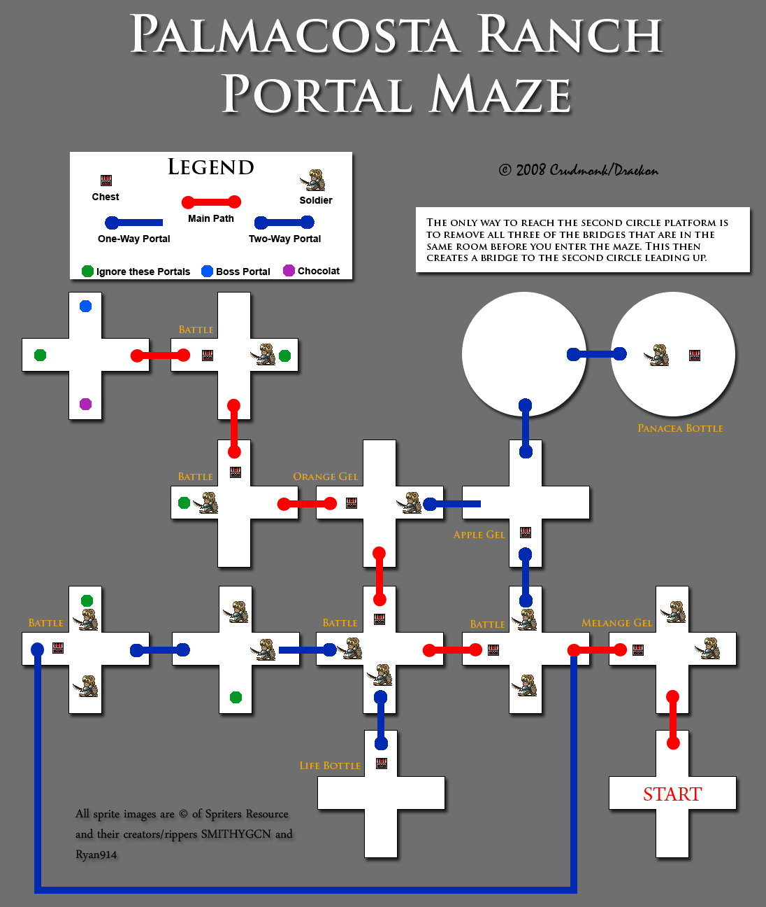

Tales of Symphonia
Content needed: pictures for puzzles, rare items, town overviews (business, maps), maps, mini games, ps3 differences --inline and an upfront section, affections guide, new game + guide
Version History
0.5: Roughly half done with the walkthrough and sidequest sections - 5/1/06
1.0: Done with the walkthrough - 9/27/06
1.25: Glossary, FAQ, hints and tips, beneficial glitches, and completion stuffs sections were added - 10/2/06
1.26: Cleaned up lots of errors, added a few things I forgot - 6/11/07
2.0: Added EX Skills, cooking, titles, and techs sections - 11/28/07
3.0: At long last, the next update. Unfortunately, due to my computer crashing a few months ago, I have lost the cumulative updates I've been making. On the bright side, I am now using the markup feature recently introduced to Gamefaqs, allowing much easier navigation. - 12/4/09
Introduction/Why Should I and How Do I Use This FAQ?
When looking for one specific piece of information and the table of contents doesn't look like it will bring you right to it, use Ctrl + F to search for the term you're after. So that you don't have to repeatedly search all of the pages this will likely be broken into, scroll to the bottom of the page and click on the print link. This will display the entire guide on one page (which is actually how I'd prefer it to be by default).
My main reason for writing this FAQ is that Tales of Symphonia is a non-linear game, meaning that there are several different orders events can take at various points in the game. Most of the FAQs here (at GameFAQs) only cover one of the possible orders of events, which is fine if you follow the walkthrough from the beginning, but can cause confusion if you don't. In order to solve this dilemma, I will list each possible order when the split occurs and again once all the events have been completed.
When sidequests become available as you play through the game, I will let you know that it is available. Refer to the sidequest section of the FAQ for more info on them. In the sidequest sections are complete lists of dogs and women for Colette's Dog Lover title and Zelos's Gigolo tile. The walkthrough also lists all the treasure chests needed to get Sheena's Treasure Hunter title.
One thing I will not do in this FAQ is recommend levels for bosses/dungeons. Nobody can tell you what level YOU need to be to beat whoever better than you yourself. In general, if you find yourself relying heavily on healing items, taking some time to level up is often in your best interest.
Finally, I will assume you know what's going on in the story, so I will avoid retelling it and will avoid spoiling the story for you. Some spoilers are unavoidable, though, but are nothing major. If you need a story recap, read the handy Synopsis feature in the menu.
Glossary of Terms
Accuracy: Accuracy is a stat that supposedly deals more damage to enemies with lower evade, but it's complete effect is unknown.
Affection: Affection is how much a character likes Lloyd. This is determined largely by various dialogue choices you make during the course of the story, but there are also overworld skit points, represented by rings of light, that can change affection. Some sidequests also affect affection.
Attack: The attack stat is what determines physical damage done. Damage done is approximately half of the attack stat. The attack stat equals a character's strength stat plus the attack points of any weapons and armor equipped.
Attack Attribute: Attack attribute is when your physical attacks have an element associated with them. An attack attribute can be given by using a quartz item during battle, equipping a weapon that has an attack attribute, using one of Sheena's Sylva or Tethe seals, or equipping a gem received from a summon spirit(Aquamarine for example). To see what attack attribute a character has, go to the status screen from the menu and press down on the C stick.
Combo: A combo is a string of hits that keeps an enemy staggered. Each successive hit in a combo does less and less damage. Bonus experience is based on the highest combo achieved during that battle. Enemies tend to fall over after 50 hits, but you can pick them back up with Demon Fang or Photon as they fall.
Cooking: Once after each battle, you may have the character of your choice cook the meal of your choice. Cooking can recover HP, TP, cure status ailments and/or boost stats for the next battle. In nearly every town, you'll find the Wonder Chef disguised as some object. Examine it to learn a new recipe. Each character has his/her own skill level for each recipe. The more stars you have, the more effective the healing will be, and you'll have a lower chance of failing to cook the dish. Every recipe has required ingredients and usually some additional ingredients. Using extra ingredients will increase the effectiveness of cooking. In order to increase a character's cooking ability, simply have him/her cook the dish a couple of times. Even failures help to raise your ability. You can choose who cooks what on the Cooking menu.
Defense: Defense is the stat that reduces physical damage taken. It is the sum of the character's natural defense plus the defense of any equipment.
Elemental Defense: Elemental defense determines what elements a character or enemy is resistant to. There are five categories of elemental defense; weak, none, resist, immune, and absorb. When you are weak to an element, that element will cause double damage. None does not affect anything. Resist will halve damage, immune will negate damage, and absorb will heal you the amount it would hurt. How many pieces of equipment you have on with a given resistance will determine what your elemental defense is. You can check elemental defense by going to the status screen from the menu and pressing down on the C stick.
Evade: Evade supposedly makes you take less damage from enemies with less accuracy, but it's complete effect is unknown.
EX Skills: EX Skills give your characters new abilities, improved abilities, or improved stats. Combine certain EX Skills to discover Compound EX Skills. See the EX Skills section for a list and description of EX Skills.
Grade: Grade is a quantity used to assess your battle style. Grade can be used to purchase customization materials and EX Gems in some places. It is only a waste to buy EX Gems since you find plenty in chests. It's alright to buy the occasional material needed for that one item you need to finish the Collector's Book, but try not to make a regular habit of it. Save your grade for the Grade Shop at the end of a game.
Things such as using a tech to finish an enemy, killing two enemies with consecutive attacks, and finishing the battle with full HP/TP will earn you more grade. Using items, finishing while afflicted with a status ailment, and dieing will decrease the amount of grade you earn.
Guard Tech: A guard tech is one that reduces damage taken by 80%. Every character has a guard tech. Kratos will teach you how to use them before you enter the fire seal and characters that join later already know them. Use one by holding the guard button and moving the control stick down or put it in a tech slot. The TP cost for a guard tech is not constant. Rather, it is 10% of the character's max TP. Guard techs are the only way to defend against attack magic. If a spell is coming that you know you can't dodge (Photon, Dark Sphere, etc.), use a guard tech to block it. The bad thing about them is that they only last maybe a second and leave you open to attack afterward.
HP: Hit Points, your character's amount of life. When it is depleted, the character dies. Use gels, healing spells, cooking, and inns to restore HP. Some accessories also slowly restore HP during battle.
Intelligence: Intelligence determines both magic attack and magic defense. Very few pieces of equipment raise intelligence, but most kendamas and rods raise intelligence.
Luck: The luck stat determines how often some effects take place, such as critical hits, most non-constant EX Skills, when you learn a tech after meeting the requirements, and what kind of items Zelos can get when he uses his Personal EX Skill. It is not a constant stat and will randomise from 0 to 100 every time you stay at an inn.
Overlimit: Overlimit occurs when a character or various enemies tension value reaches a set number. Visually, a black aura appears around the character or enemy. While in overlimit, damage taken is cut in half, you do not stagger after being hit, and casting time is slightly reduced. Tension increases as you take hits, when party members die, and when you cook. Tension is reset back to zero if a character dies. When someone is close to entering overlimit, they start flashing red around the edges. Do not confuse this flashing with what happens after getting up from the ground, though, which is similar in appearance but unrelated. When you go into overlimit, you should go on the offensive since you take reduced damage and don't stagger. When an enemy goes into overlimit, halt your attacks and tough it out until it ends.
Techs: Techs are special attacks that characters use and are either a physical attack or a spell. Some cause more damage, some recover HP, some boost your status, and all of them consume Technical Points, TP. If you don't have enough TP to use a tech, you're out of luck unless you can recover some TP somehow (see below). Most physical techs can also be linked to each other for higher combos.
Titles: Titles are awarded for doing certain actions in battle, finishing some sidequests, or just part of the story. To change titles, go to the Status screen and press A on the current title. As you look through the list of titles that you have, stats listed in red give you a lower chance of an extra boost to that stat at the next level up, green gives you a higher chance, and grey does not change. Some titles change the clothes a character wears, called costume titles. Although you won't get any extra boosts to your stats, it can be a refreshing change to see Lloyd all dressed up instead of the usual red. For a complete list of titles, see the Titles section.
TP: Technical Points are consumed to use techs. Replenish them with gels, by cooking, or resting at an inn. You also regain one TP when you hit an enemy with a normal attack, but only if the enemy is not guarding. Some TP is automatically restored at the end of battle. The amount is determined by the character's max TP.
FAQs
Q. I hear that this game has multiplayer, how do I set it up?
A. Control type is what determines whether a human controls a character or the AI does, and which of the first four slots a character is in determines which controler slot controls the character. For example, the character in the first slot is controlled by either the AI or the controller in slot one.
Let's say player two wants to play as Presea. Move Presea to the second slot, then go to her tech menu. Highlight her name and press Start to cycle through the control types (Auto, Manual, Semi-Auto). Auto is complete AI control, Manual is complete player control, and Semi-Auto is AI assisted player control. Choose either Manual or Semi-Auto and you're good to go.
Q. Can I change my character in battle?
A. Sure, just open the menu with Y, then press Z to cycle through the available characters. The character on the far left is controlled by player one.
Q. Where are the anime scenes that are supposed to be in here?
A. There are four; the intro before the title screen, one near the end of disc one, and the other two are part of the ending.
Q. How do I link techs?
A. You can link techs in ascending order by level. There is a restriction that you cannot link two techs of the same tree and consecutive level. For example, you can't link Demon Fang and Fierce Demon Fang because they are from the same tree and are level one and level two techs respectively. You can, however, link Demon Fang and Demonic Circle. Even though they are from the same tech tree, they are level one and level three respectively. Some techs like Item Thief do not link to others.
Q. What do titles do?
A. Titles give you a slightly larger stat boost when you level up. What stats get an extra boost and how much depends on the title. To change your title, go to the status screen and press A. Choose the title you want and stat names will be listed at the bottom. Stats listed in grey give the same chance of a stat boost as the currently equipped title, green stats get a bigger chance of a boost, and red stats get a smaller chance of a boost. Some titles also change the clothes a character wears.
Q. What do the Yata Mirror and Yasakani Jewel do?
A. The Yata Mirror gives you small HP/TP regeneration and the Yasakani Jewel prevents physical ailments. To see what additional effects a piece of equipment has, equip it and go to the character's status screen, then press C-down. Extra effects of equipment are listed here, along with elemental weakness/resistance and attack attribute. Small HP or TP regen means the character gains 1% of his/her max HP or TP every seven seconds in battle. Large HP or TP regen is the same as small, but 3% of the max HP or TP.
Q. What does the EX Skill Spell Charge do and how do I use it?
A. To use Spell Charge, you must control the character that has it. Start casting a spell and hold the tech button to delay the spell. When your character starts flashing, the spell is being delayed. Press the attack button while delaying a spell to charge it. A charged spell is released at the end of the next attack combo. A charged spell does not cost any TP, but it does less damage.
Q. How do I change types?
A. Your type is largely determined by your EX Skills. Each EX Skill is either T type or S type, as stated in its description window. When you have a majority of one type of EX Skills, the T-S bar will move toward the majority type side after each battle that character participates in. The higher the number of majority EX Skills, the more the T-S bar will move after each battle. Using the T and S Rings in addition to this will speed up the process.
Q. How do I use techs that are blue?
A. You don't. Yet. When a tech appears in blue, it means that you are at or above the required level to learn it, are the correct type (S or T [if applicable]), but have not yet activated it. Some techs will require 50 uses of a lower level tech before you can learn the new one, others simply need you to know another tech, and some are just learned when you get to the right level. New techs can activate with a regular attack, a previous tech, or any spell. Luck also influences when you will learn a new tech. If it's pretty low, sleep at an inn to randomize it (hopefully so it's higher), and try to learn the new tech.
Walkthrough
Iselia, the Village of Oracles
As the game begins, the main character, Lloyd is in school. Once you gain control, head to the door on the left wall. Once Colette and Genis join you, go examine the hole in the upper wall to get Colette's Klutz title. Go outside and head east and north towards the exit. Defeat the enemies that enter the village. If you like, you can go east one screen and enter the house. Colette's father, Frank, will heal you for free. Go out past the schoolhouse and onto the world map. Follow the coast to the temple.
Martel Temple
Treasure to get:
- Panacea Bottle
- Life Bottle (2)
- Apple Gel
- 250 gald
Upon reaching the temple, head up the stairs and prepare for a fight against two foot soldiers. Immediately following the first battle, you fight your first boss.
BOSS: Vidarr
- HP: 4000
- AA: none
- Weakness: none
- Resistance: none
Vidarr is just a big bully, so don't be too afraid of him. His attacks are slow and easily dodged by backstepping (blocking and pressing the control stick in the direction opposite the enemy). Wait for him to attack so you can block or dodge it, then move in and attack. Partway through the battle, a mysterious man will jump in and join you against Vidarr. Vidarr will not change his strategy at all, so keep hammering away at him. The man who jumps in has a healing tech, so press Y to open the menu and go to his tech menu and order him to use First Aid on you if you need it.
Once Vidarr goes down, you will more than likely be in need of some healing, so head back to Iselia and get Frank to heal you. Return to the temple and proceed inside. Go down the hallway to the right and down the stairs. Defeat the Golem, which will turn into a block that Colette knocks down below. Kill the next Golem that appears and push him down the middle hole in the right column. Kill the next one and push him down the same hole. Go down the steps on the bottom of the platform and push the block you just pushed down to the right. Walk across the blocks and up the stairs to get a Panacea Bottle from the chest. Go back up to the top platform and kill the next Golem, push him down the middle hole in the left column, then push him to the left. Go up these stairs and open the chest to get a Life Bottle. Go back up to the top platform and kill the next Golem, push him down the hole in the middle of the top row, kill the next, and push him down that same hole. Go down below and push him up, then go up the stairs to get the Sorcerer's Ring.
Go back up to the platform with holes and then up the stairs on the left. Go down this hallway and open the chests containing Apple Gel, Life Bottle, and 250 Gald. Go back down to the Golem room and up the stairs on the right. Follow the path back down to the central area, then north. Use the Sorcerer's Ring on the sealed door to open it, then take the teleporter to the top floor. After the scene, return to Iselia.
Go to Colette's house and receive the Collector's Book. Now go to the schoolhouse and speak to Raine to get Genis's Brotherly Love title. Follow the path outside to the south and west and go into Genis's house for a lesson in cooking. Go to the southern gate of Iselia and go to the world map. Head northwest into Iselia Forest.
Iselia Forest
Treasure to get:
- Apple Gel (3)
- Life Bottle
- Orange Gel (2)
- Leather Glove
- 500 Gald
As soon as you get in the forest, turn east and head up the hill and go west at the fork. Open the chest for an Apple Gel. Continue up the hill and open the chest for a Life Bottle. On up the hill, Genis will lead you west to the human ranch. Walk over to the southern edge of the fence to meet his friend. After the conversation, head northeast along the edge of the cliff and jump up the cliffs. On the top right cliff is a chest with an Orange Gel. Jump up to the top left cliff to trigger another scene, after which you fight two desians. After defeating them and watching the following scene, continue north through the forest. On the next screen, go north, then west up a little slope and open the chest for an Apple Gel. Head east of here for a Leather Glove. Go back south and then east and open the chest for yet another Apple Gel. Cross the bridge and open the chest for 500 Gald. Go north up the path and examine the sack on the branch to get an Orange Gel. Exit to the north onto the world map. Head northwest to get to Dirk's House.
Dirk's House
Go inside and see a scene with Dirk. After coming outside, you have the option of talking to your friends or going to talk with Colette right away. If you talk to the others, talk to Colette on the bench when you're done. In the morning, go down the stairs from Lloyd's room and talk to Dirk at the grave. Genis shows up and you go back to Iselia.
Back in Iselia, take this chance to stock up on supplies, especially Panacea Bottles, which will be very helpful in the next area. When Genis left in Iselia Forest, he left his equipment with you, so equip him again. When you're done, go to Colette's house. When you hear a noise outside, you can talk to Frank to get healed for free again. Head south of Colette's house and defeat the desians. Go up north to the schoolhouse and defeat the desians there and the man will give you an Apple and Orange Gel as thanks. Go see Frank to get healed again and go to the south gate to fight another boss.
BOSS: Exbelua
- HP: 5000
- AA: none
- Weakness: none
- Resistance: none
This boss can be a pain, but it's really not any harder than Vidarr. Walk in close and either block or dodge when it swings it's arm at you, then attack. Watch out when it starts swinging twice in a row and wait for both attacks before moving in. When Exbelua loses about half of its HP, it uses a close range attack called Insane Cell. Be sure to block this attack or be far enough away that it won't hit you, since it hits several times.
After Exbelua is defeated, it's time to head south. Go back to the world map and follow the dirt road south for the most part to a House of Salvation. Continue south to the desert and the city, Triet.
Triet, the Desert Oasis
Once you reach Triet, you can buy some new weapons and armor on the west side of town. Examine the wanted poster on the corner of the inn. Go into the inn and up the stairs. Examine the object in the corner to find the Wonder Chef, who will teach you how to cook Cabbage Rolls. Go to the northern screen and enter the tent and speak with the fortune teller. Pay her the 100 Gald, then leave town, but be ready for a fight on your way out. When you wake up, you find yourself in jail.
Sylvarant Base
Treasure to get:
- Beast Hide
- Beast Fang
- Magical Cloth
- 1500 Gald
When you regain control, walk up to the cell door and shoot the guard with the Sorcerer's Ring as he walks by. Exit your cell and open the one next door to get a Beast Hide. Open the cell beyond that to find a memory circle. Go east and open the chest behind the desk to recover your equipment, then proceed east and through the door. In this room, examine the weird machine near the door to make the Sorcerer's Ring shoot electricity instead of fire balls. Shoot the robots that patrol the room when they are on top of the blue panels to make the door open. This part can be tricky, but a good tip is to walk behind them and shoot them from behind. When they both get zapped on the blue panels, go through the western door. Defeat the soldier patrolling the hall to get a Memory Gem, which will unseal a sealed memory circle. Go down the north hallway into the hangar to get a Beast Fang. Head back south, then west. In this room you can use the Memory Gem you just got to unlock the memory circle.
Shoot the top column on the left side of the room, then the middle column. Go south through the door and get the Magical Cloth. Go back north and shoot the bottom column, then go through the east door to get 1500 Gald. Go back west and shoot the top and middle columns one more time each, then head north through the door. You will now face yet another boss.
BOSS: Botta
- HP:4200
- AA: none
- Weakness: none
- Resistance: none
You fight Botta with two Foot Soldiers as well. Eliminate the minions first and work on Botta last. Lucky for you, Colette, Genis, and Kratos show up for this fight. Botta can knock you back with his sword swings unless you guard against them, and he uses a tech called Rock Breaker that shoots rocks at you. Attack him between his attacks and try to have the others join you beating him up. When he loses about half his HP, he will cast Stalagmite on you, which will hurt quite a bit. When you see him casting, back off and wait. Once he finishes casting, move out of the way to avoid the spell, then renew your onslaught.
Once Botta decides it's time to leave, head back to Triet. Go to the inn and watch the scene. Now you can go upstairs and talk with Colette, Raine, and Genis. Give Raine her fixed key crest and you have the option of following Kratos outside. In the morning, head outside to join the rest of the group. Gear up and get everybody some new equipment, then head west by southwest on the world map to the Triet ruins.
Triet Ruins, the Seal of Fire
Treasure to get:
- Lemon Gel
- Stiletto
- Apple Gel
- Life Bottle
- Bracelet
- Circlet
- Savory
- Mumei
- 1000 Gald
When you first arrive at the ruins, you encounter two Fire Elements that will only cast Fireball on you. Interrupt their spells and kill them to have Kratos teach everyone self-defense techs that greatly reduce all damage when used. Walk up the steps to open the door to the seal. Once inside, follow the hall to the west, then south. Shoot the chest with rocks on top of it and open it to get a Lemon Gel. Go through the nearby door and kill the bird enemy for a Memory Gem. Walk up the steps and towards the grey torch on the left wall. Shoot it with the Sorcerer's Ring to make a platform rise up. Do not shoot the other torch in this room yet. Go back to the hallway and all the way to the north. DO NOT open this chest yet, it contains a powerful enemy called a Fake. If you decide to fight him now, be aware that only magic can harm him; physical attacks will not even make him stagger. If you have a Red, Black, or Yellow Quartz, you can use it on one of your melee fighters so you will do elemental damage to him, but it's still a tough battle. I suggest saving him for later. Go through the door to the left. Go north and west, then push the block in front of the torch so you can get the treasure chest, which contains Stiletto. Light the torch nearby to raise another platform. Light the second torch in this area, too. Go back to the corridor and enter the door by the entrance hall. Go south and open the chest for an Apple Gel. Go up and around the wall and open the chests for a Life Bottle and Bracelet. Push the blocks to the left so you can get on the stairs and platform that you just raised. Light the torch. Go back to the main hall and into the door on the southern end. Now you can light that torch on the right side. Go back to the hall and into either the middle or northern door. Go along the top and open the four chests containing a Circlet, Savory, Mumei, and 1000 Gald. Use the Memory Gem on the sealed circle next to the teleporter and save, then warp to the boss.
BOSS: Ktugach
- HP: 5000
- AA: none
- Weakness: water, ice
- Resistance: fire
BOSS: Ktugachling x 2
- HP: 1500
- AA: none
- Weakness: water, ice
- Resistance: fire
This is the first boss with an exploitable weakness, so take full advantage of it by having Genis cast Aqua Edge or Icicle on these guys. Focus on the Ktugachlings first, since all they do is cast Fireball, which gets very annoying. Aqua Edge will not work so well on them, though, since they float in the air. Either knock them down first or have Genis focus on the Ktugach while everyone else takes out the Ktugachlings. The Ktugach can be a real pain in the butt with it's needle shooting attack, but it's not too bad if you block it. If he sits down and starts casting, back off and wait for him to cast Eruption. You can try to avoid it or block it with a self defense tech. With everyone attacking the Ktugach, he shouldn't last too long.
After the bosses are defeated, Colette will release the seal and learn Angel Feathers. I recommend that you turn this tech off in Colette's tech menu since it takes a while to cast it and she could do more damage using other techs. On your way out, take the time to train some and leave when your health starts to get low. As soon as you leave, a scene will occur and you will camp out for the night, fully healing everyone. Return to Triet to get Raine's Sisterly Love title, then head east towards the mountains. Look for a grassy patch next to the mountains with a trail in it. This is the Ossa Trail, your next stop.
Ossa Trail
Treasure to get:
- Battle Staff
- Melange Gel
- Apple Gel
- Orange Gel
- Fine Guard
- Black Silver
- Beast Fang
- EX Gem Lv 1
Pretty soon after you start up the mountain, there is a cutscene. Continue on after that. On the second screen, open the chest for a Battle Staff. Keep going to the next screen, where there is a save point on the peak, and a Melange Gel and Apple Gel south of the save point. Continue down the eastern side of the mountain. On the next screen, grab the Orange Gel from the chest and prepare for a boss fight at the base of the mountain.
BOSS: Clumsy Assassin
- HP: 1800
- AA: none
- Weakness: none
- Resistance: none
BOSS: Guardian: Wind
- HP: 2000
- AA: none
- Weakness: none
- Resistance: none
I always find it's best to split up for this fight and take both of them on at once instead of focusing on one first. Use Lloyd and/or Kratos to attack the assassin while the others keep the guardian busy. A good trick to use on the assassin is to jump over her, causing her attack to miss, then attack her from behind. Watch out for her Pyre Seal; it does decent damage and knocks you down. The guardian has a pretty simple attack pattern, but is strong. Since he hovers off the ground, techs like Demon Fang don't hit him, so don't waste your TP using attacks that hug the ground. The best way to defeat the guardian is to just block his attacks, then counter with your own.
After the assassin makes her escape, you can explore the cave she came out of. Explore the left side of it to find a Fine Guard. Get some Black Silver from the right side. In the very back you can find a Beast Fang and EX Gem Lv 1, as well as a very strong optional boss called the Sword Dancer. See the sidequest section for more about the Sword Dancer. Although you can fight him now, I highly suggest you wait until later. Exit the cave the same way you entered and head to the southern exit. Kratos will teach you about attacking as a group and unlock Unison Attacks. Be sure to read up on this powerful new technique, it really helps against bosses. After learning about Unison Attacks, exit to the south to the world map. There is a village a little to the south on the coast, and I suggest you head for this village, but you don't have to yet.
The Road Not Taken
This is where things can get a bit screwy if you don't know what's going on. There are two different paths you can take here: you can go to the fishing village, Izoold, and take a ship to Palmacosta now, or you can go north to Hima. Going to Hima first is generally harder since you have to fight tougher enemies earlier, but some people say the story makes more sense doing it this way. I personally see no difference, though. Either way you decide to go, you should go to Izoold first to rest and stock up on items. You could also play with fire and go all the way to Asgard to buy new weapons and armor at this point, then return to Izoold, but the enemies around Hima are tough and unforgiving. The following is the altarnate route you can take at this point. How to get through each dungeon will be explained later, this list is just for reference purposes:
If you go to Hima BEFORE Palmacosta-
- Agree to help Sofia heal Pietro in Hima. Here you can do either the Balacruf Mausoleum or Tower of Mana events first. It's up to you, but the order I list it in saves on travel time.
- Go to the Tower of Mana to learn that it is locked.
- Go to Luin and ask the priest in the church about the key to the Tower of Mana. You will be redirected to Asgard.
- Go to Asgard and ask the priest in front of the weapons and armor shop about the key to the Tower of Mana. You will be redirected to the Balacruf Mausoleum. While you are in Asgard, you might as well start the Mausoleum events as described in the Asgard, the City of Ruins.
- Go to the Balacruf Mausoleum and talk to the priest outside to get the key to the Tower of Mana. While you're here, complete Balacruf Mausoleum, the Seal of Wind.
- Go to Tower of Mana, the Seal of Light and release the seal. Get Boltzman's Book from the book shelf in the first room on your way out.
- After releasing both seals, complete the Luin Revisited and Asgard Human Ranch story arc.
- Go to Lake Umacy to learn that you need Undine. Now go to Izoold and take the ship to Palmacosta.
Izoold, the Small Fishing Port
When you enter Izoold, talk to the fat man wandering around on the first screen; he mentions something about Aifreed. Go into the second building and talk to the young woman, Lyla, who runs off to the docks when you tell her Aifreed has gone back to Luin. Go into the third house and examine the object in the northeast corner to find the Wonder Chef again, who teaches you how to make Rice Balls. Go back outside to the second screen. You can talk to the pink Katz to play the Emo Bubble mini game with Genis. See the sidequest section for more. Go onto the docks to see Lyla asking Max to deliver a letter to Aifreed. When she asks you to deliver the letter, you can accept or decline, but if you decline, you can't do a sidequest later on. Talk to Max when you're ready to go to Palmacosta.
IF MAX, LYLA, AND THE FAT MAN ARE MISSING, IT MEANS THAT YOU WENT TO HIMA AND MUST FINISH THE EVENTS AS OUTLINED IN The Road Not Taken BEFORE THEY WILL RETURN.
Palmacosta, the Port City
Upon arriving in Palmacosta, head south one screen. Watch the encounter with the other group where Colette demonstrates her klutziness again. This other group will not let you leave town until you replace the potion that Colette broke. Go east over the bridge and into the second building and watch another scene. Once it's over, speak to the woman behind the counter and buy a Palma Potion if you can afford it. If you don't have 1000 gald to spend on it, Cacao, the shopkeeper, will suggest you look for work in the acadamy's cafeteria. Go back outside and head east one screen where you see yet another scene. The acadamy is the building on the far right. When you enter, some students will challenge Genis to a quiz. See the sidequest section for more. Examine the stand with red and white balls on top of it to find the Wonder Chef again. He will teach you how to make Omelets this time. The cafeteria is on the first floor on the east end of the hallway. Talk to the man behind the counter and Colette will work as a waitress. Do your best to remember who orders what and how much of it. No matter how good or bad at this you are, you will get a free Palma Potion if Cacao told you to work in the cafeteria and Colette will also get the Turbo Waitress title. Go back outside and enter the government building, the one with two guards standing outside it. Walk up the steps to talk with Governor General Dorr and Neil. After talking with them, go to the church next door and talk with the pastor up front to learn more about the Book of Regeneration. You can also go north onto the pier to see the steam ship, as well as meet the assassin again. This is the time to view the first of four training scenes with Kratos. Speak to the guard on the right side of the government building's door and choose to train. You must see this scene if you want to see the others later. Now leave Palmacosta and head north along the road.
On your way north, you will come across a House of Salvation. Check it out if you like, but you'll have to come back here later. Continue north to Hakonesia Peak. Enter the building and speak with the old man, Koton. Colette will notice that he has the Book of Regeneration and ask to read it. Koton refuses to let her read it unless you bring him a Spiritua Statue. You do not have to do this, but it is recommended since you won't be able to get some very good armor later if you don't get him the statue soon. Go back to Palmacosta and head east to the plaza. Fight off the desians and rescue Cacao. The skit "To Fight the Strong" will start to show up about now. Watch it to get another entry in your training manual. Head back out to the House of Guidance between Palmacosta and Hakonesia Peak. When you get there, a soldier will ask you to go to the Palmacosta Ranch and assist with a raid. While you are still at the House of Salvation, go inside to see the assassin again. Leave and re-enter, then speak with the priests about getting the Spiritua Statue. They will tell you it's at Thoda Geyser.
You now have the choice of starting the Palmacosta Ranch story arc or doing the seal of water at Thoda Geyser.
ONCE YOU START THE EVENTS AT THE RANCH, YOU CANNOT GET TO THODA GEYSER UNTIL ALL EVENTS DEALING WITH THE RANCH ARE COMPLETED.
I always do the seal of water first, so I'll list it this way here. From the House of Salvation, head southeast through a gap in the mountains. Turn to the east to find the coast. Head south along the coast to find a boat dock. Go into the building and speak with the receptionist and pay 200 gald to rent the boats.
Thoda Geyser, the Seal of Water
Treasure to get:
- Mermaid's Tear
- EX Gem Lv 1
- Orange Gel
- White Silver
- Life Bottle
- Circlet (2)
- Stun Bracelet
When you arrive at the geyser, make use of the save point on the dock. The man with a backpack standing next to a rock will sell you items if you wish. Go up the stairs on the east side of the geyser. If you told the priests in the House of Guidance that you would get the Spiritua Statue, you will go get it now. Examine the oracle stone behind the board to open a cave and extend a bridge. If you aren't far enough in the Spiritua Statue quest, don't worry about the bridge being there, it won't affect anything. Go up the bridge and enter the seal.
Walk north along the path, then east down a flight of stairs. Continue east to get a Mermaid's Tear from a chest. Continue down the stairs and go through the western door along the south edge of the screen. Behind the large pillar on the east wall is a chest with an EX Gem Lv 1. Go between the pillars to end up in another room on a balcony. Open the chests for an Orange Gel and White Silver. Go back through the pillars and use the Sorcerer's Ring to light the two torches on either side of the balance. Your character will notice something change about the balance. Go back through the north door and change the function of the Sorcerer's Ring at the device next to the stairs. Open the chests to the right for a Life Bottle and a Circlet. Go through the eastern door along the southern edge now. Kill the fish monster that is by the chests for a Memory Gem. Open the two chests under the arches for a Stun Bracelet and yet another Circlet. Go down the southern stairs and west along the path and through the door. Get on the left side of the block and push it to the right until it clicks into place beneath the door. Go back to the room with the ring changer in it and go through the western door again. Use the ring's function to shoot water into the right side of the balance. This should cause a door to close on the level below, but it will be blocked by the block you just moved. If you did not put the block in the correct place and the door completely closed, shoot one of the torches with the ring to extinguish it and start over again with lighting the torches. Go back down to the block and through the door. Walk up to the second balance and shoot some water from the ring into the right side of it. Now a large platform will rise out of the water to the west, on which is the warp to the boss. Go back up to the room with the torches and other scale. There is a sealed memory circle on the southern end of this room. Unseal it and save, heal up, then step onto the teleporter to face the boss.
BOSS: Adulocia
- HP: 10,000
- AA: none
- Weakness: lightning
- Resistance: water, ice
BOSS: Amphitra x 2
- HP: 2300
- AA: water
- Weakness: fire, lightning
- Resistance: water, ice
Taking advantage of elements is a huge benefit in this battle, if you can do it. Genis's fire and lightning skills will work great against these guys, but I don't like to take a mage into a boss battle against three opponents. It's really up to you to decide if you want Genis to fight or not, but it can be a pain trying to keep everyone away from him so he can cast magic. Another great way to shred these bosses is to have Colette use Para Ball if she has it. If she isn't at a high enough level to learn it, taking the time to learn it is a good idea. To learn it, Colette must be S type, at or above level 18, have used Pow Hammer at least 50 times, and don't know Pow Pow Hammer (forget it if you already know it). As for taking advantage of elements, nearly all the attacks used against you have a water element. You should have at least one Poison Charm. Equip it to your main fighter to cut water damage in half. The more you have for the other characters, the better. As always, focus on killing the two small fries before going for the big fish. The Amphitra will either slap you with their tales, head butt you, or sing, causing music notes to attack you. Just block their singing attack and start an attack of your own once they finish.
Adulocia can be a menace as she jabs at you with her fish-hands. Sometimes she will follow up with a bubble spraying attack that can cause heavy damage if you don't block it. She will also cast Spread on you, so when you see starting to cast, back off a few paces and wait for her to finish. Spread is easily dodged by simply running forward at the right time, which is right after she finishes casting. With three or four people attacking her at once, Adulocia won't survive too long.
After the battle, Colette will release the seal, you will be fully healed, and ready to continue on. On your way out, take the time to fight a lot and gain a few levels: as soon as you exit the seal, another camp scene will take place, fully healing you yet again.
IF YOU DID NOT ALREADY DO THE EVENTS WITH THE Palmacosta Ranch, YOU MUST DO THEM NOW. IF YOU DID, GO NORTH OVER HAKONESIA PEAK TO Asgard, the City of Ruins.
IF COLETTE JUST LEARNED HOLY SONG, PROCEED TO Luin Revisited.
If you're headed to the ranch, take the boats back to the docks. On the world map, head north. Just north of the gap in the mountains is a forest. The Palmacosta Ranch is in this forest.
Palmacosta Ranch
Treasure to get:
- Apple Gel (2)
- Life Bottle (3)
- Orange Gel (4)
- EX Gem Lv 2
- Mage Cloak
- White Silver
- Omega Shield
- Melange Gel
- Panacea Bottle
Upon arriving at the ranch the first time, Neil will take you into the bushes and discuss some important matters with you. You are given the choice of going back to Palmacosta to investigate Neil's theory or continue at the ranch. It does not matter what you pick, you will have to do both options anyway. If you do choose to go back to Palmacosta, you will get an extra key item. How you enter the ranch will also depend on which choice you make. If you choose to go ahead and attack, then you will go down the path to the right. Examine the gate to open it and continue north and into the building. You will start in a room with a ring changer. If you go back to Palmacosta, take the left path and enter the code on the card key you received (3341) into the machine. The door will open, allowing you access. You can't really do anything in this room yet, so follow the corridor west, then northeast and through the door to the east. You will end up in the ring changing room.
Examine the ring changer to change the function of the Sorcerer's Ring to that of a radar type thingie. When you use it, the screen will get a green tint, enemies will not show up, hidden items will appear as little glowing things, and teleporters will become active. Go into the room to the west and defeat the desian for a Memory Gem. Activate the ring to find an Apple Gel in the first area. Continue south and activate the ring to find an Orange Gel in this area. Go down the corridor to the east and activate the ring again to find an Orange Gel. Go part way up the northern corridor and use the ring to find a Life Bottle. Go back to the main room with the ring changer. Activate the ring and use the teleporter on the north end of the room. Go through the western door to free the captives and receive the Blue Card. Go back east through the room you were just in, past the save point, and into the next room.
Here there are four blocks that can only be seen when the ring is activated, but you don't have to have the ring on to move them. Push one of the blocks straight down into the hole and walk across it. Activate the ring on the center little island to find an EX Gem Lv 2. Bring another block over and push it across the middle to fill the gap on the other side. The block that starts to the north east the most is covering up a Mage Cloak; pull the block away to get it. Head east from the blocks, activate the ring, and examine the orb coming out of the pedestal. A bridge will appear. Cross over it and walk down the stairs to find a Red Card. Go back across the green bridge, activate the ring again, and examine the orb again to make the bridge disappear. It is not critical that you disable the bridges behind you, but you have to if you want an item a little later on. Go south across the area you spanned by dropping the blocks into holes. Activate the ring to find White Silver and an Omega Shield. On the east side of this area, activate the ring and examine another orb on a pedestal. Cross to find a machine called a refresher. Examine it to restore your health or purchase items. Just north of the second bridge is a third; activate it and cross it and use the ring to find a Life Bottle. Go back and disable the third bridge. Go further east and defeat the desian walking around to find a Purple Card. Use the ring in this area to find an Orange Gel. Go back across the second bridge, disable it, and go up the stairs, across the blocks you dropped in the holes, and through the western door. Use the save point and activate the ring, then use the teleporter on the north end of the screen, which requires the three cards you found.
Next is a large and confusing warp maze which is easy to get lost in. There are three ways of solving this puzzle on your own, but they won't get you all the items. One method is to always use the warp on the path a guard is not patrolling. Another is to use the warp next to the hidden "item." Some of the "items" are actually alarms that are set off when you examine them, forcing you to fight. The last is to activate the ring and stand on a teleporter. If you hear a machine noise, this is the correct teleporter. The center ring in every room of the maze will warp you back to the begining if you wish. Following the steps below, you will get all the items hidden in the maze.
- Use the ring on the west end, examine the item for a Melange Gel, and use the nearby teleporter.
- Go to the north end and use the warp. In the next room, use the northern warp to arrive on an island in the room with the three bridges. If all three of the bridges are disabled, a stairway will lead up to another plat form with a Panacea Bottle on it. Go back to the bottom platform and use the warp. Go back up to the bottom warp, take the item, an Apple Gel, and use the warp.
- Use the western warp, then use the southern one. Activate the ring to find a Life Bottle, then warp back.
- Use the northern warp.
- Get the Orange Gel next to the western warp, then take that warp.
- Use the northern warp point.
- Use the western warp point.

Now you fight a required battle to rescue Chocolat. After this, there is a sealed memory circle on the east end of the room. You can unseal it and save, or you could save the gem for later. You can use the center warp here, use the save point on the eastern end of the room, go and use the refresher to heal yourself, then use one of the three methods described earlier to get back to Chocolat. Use the northern warp that Chocolat is next to to warp to the boss, but there is another fight, same as before, before you fight the boss.
BOSS: Magnius
- HP: 8500
- AA: none
- Weakness: none
- Resistance: fire
Magnius brings two henchmen along with him. You should know the drill by now; kill them first, then go for Magnius. Magnius is fairly short, so jumping over him and attacking from behind is a good strategy here. His Beast attack is annoying since it knocks you down, taking you out of the action for a few seconds. He will also use Hell Hound and Hell Axe, both of which cannot be blocked conventionally. Either use a guard tech or dodge them. He will occasionally cast Fireball, which shouldn't worry you too much, but when he casts Eruption and Flame Lance, it can hurt and is hard to dodge, so use a guard tech. As with most other bosses, they go down quickly once their minions are gone, as does Magnius.
IF YOU WENT BACK TO PALMACOSTA TO INVESTIGATE NEIL'S THEORY, YOU WILL GET THE PASS AT THIS TIME.
Now return to Palmacosta if you did not investigate Neil's theory. If you did, complete Thoda Geyser, the Seal of Water if you did not yet. If you've done both of those things, it's time to head to Hakonesia Peak and pass through to Asgard.
BACK IN PALMACOSTA
Go to the government building and go downstairs to see a disturbing scene, and then fight another boss.
BOSS: Kilia
- HP: 10,000
- AA: none
- Weakness: light
- Resistance: dark
Kilia will always start the battle off by casting Acid Rain, which lowers your party's defense. Take this opportunity to run in and start attacking her. Taking advantage of Kilia's weakness to light is a huge help in this battle. Have Colette repeatedly cast Angel Feathers on her and have Raine use Photon(if she knows it) when she is not healing you. Kilia will attack you by thrusting a ball of electricity at you, hitting several times. You can usually see this attack coming and block it in time, but it's not such a big threat as what she does later. When she loses half her health, she sprouts spikes out of her back that she will use to either whip you or stab you. The stabbing attack can really hurt, so allow her to attack you, letting you block the hit, then counter attack. You could also sit there and guard her attacks until Colette or Raine casts a spell on her, causing her to stagger, and taking advantage of this by continuing the combo.
After Kilia bites the dust another scene occurs. Before you leave town, you should know that there is now a quick jump option that will take you to the House of Salvation or Hakonesia Peak. Talk to the priestess next to the exit to the world map and make your choice.
IF YOU DEFEATED MAGNIUS BEFORE KILIA, YOU WILL ACQUIRE THE PASS FROM THIS SCENE.
IF YOU HAVE NOT DONE THE Palmacosta Ranch, GO BACK NOW AND FINISH IT.
IF YOU HAVE NOT COMPLETED Thoda Geyser, the Seal of Water, YOU MIGHT AS WELL DO IT NOW, BUT YOU DON'T HAVE TO YET.
Now that you have the pass, a new mini game is available now called Orienteering. See the sidequest section for more.
Now it's time to pass over Hakonesia Peak. If you have the Spiritua Statue for Koton, now is a great chance to give it to him and look at the Book of Regeneration. On the other side, head north until you find a House of Salvation, then west into the little canyon. Look for a city, which is Asgard.
Asgard, the City of Ruins
In Asgard, head along the path to an opening in the mountain next to an inn. Go up the stairs, but don't be fooled when Raine starts talking, you will be able to move around. Walk around to the back side of the stone dais to find two men. Watch the cutscene, then go to the east part of town after the mayor chases you away. Go up one flight of stairs and enter the house on the right. After you get kicked out, go back to the stone dais. Watch Raine perform the ritual, and then watch it go bad as a monster appears!
BOSS: Windmaster
- HP:10,000
- AA: none
- Weakness: none
- Resistance: wind
This guy is tough; don't underestimate him. He attacks mainly by swinging his arms at you and swiping at you with his bladed bottom. It's especially dangerous when he starts spinning end over end since he can hit you several times easily. Have one or two melee fighters stand up close and take the heat off the spell casters. When the spells hit, start attacking. Since Raine is required to be in this fight, having her support the melee fighters is the best role for her.
After the fight, Raine runs off to decipher what some ancient markings mean. Go back to the house at the top of the first stairs in the east end of town to get Raine back. While you are here, go upstairs and examine the phonograph next to the bed. The Wonder Chef will appear again and teach you how to make Meat Stew. The second training session with Kratos is available now by going back to the hotel on top of the hill and staying the night again, but only if you saw the first training session. Before leaving Asgard, I strongly advise you to buy two Paralysis Charms from the Cyclone armor shop, they will be handy later. You are now ready to go to the Balacruf Mausoleum to release the seal of wind, but I recommend that you go to Luin before you do.
To get to Luin, follow the dirt road northwest from the nearby House of Salvation.
Luin, the City of Hope
There isn't much to do here in Luin, but you can go to the west side of town to see the assassin again. In the item shop, examine the object in the northwest corner to find the Wonder Chef yet again. This time he has a recipe for Seafood Stew. I recommend going to the Fighting Spirit weapon shop and buying two Rabbit's Feet. Each one increases the luck stat by 30, which can be very helpful in certain situations. Now that we've wasted enough time in Luin, it's time we got on with the story again.
To get to the Balacruf Mausoleum, head back to the House of Salvation, then south to the mountains. Now follow the mountains to the east. There is a bridge that goes north; cross it. On this island, continue due east for the most part and into the mountains. The mausoleum should be clearly visible.
Balacruf Mausoleum, the Seal of Wind
Treasure to get:
- 1800 gald
- Beast Fang
- Iron Guard
- Blue Ribbon (2)
- Beast Hide
- EX Gem Lv 2
Here is yet another simple seal, but if you don't know what you're doing, it is maddening. Before you even walk up the steps, go down the path on the west side of the area and open the chest behind the man for 1800 gald. Proceed up the front steps, open the door using the map you got in Asgard, and go inside. This is also the first dungeon where you will encounter traps, so watch what you're stepping on. There are several etchings on the walls in this dungeon. Each one of these has a torch next to it that must be lit to read the message. Some of the torches cannot be lit because there is a constant wind blowing, preventing the flame from catching. You have to stop the wind by pushing blocks onto buttons in two different places. The etchings on the walls are riddles that hint at how to solve the final puzzle before the actual seal. Rather than explain each riddle, I will just tell you where they are and exactly how to solve the puzzle.
Go west of the entrance, but be careful of the plate on the ground; spikes will pop out of it when you get close enough. Trip the trap, then run across right after it resets itself if you're feeling frisky, or just slowly creep across it. Kill the bug avatar monster on the stairs for a Memory Gem. Continue up and to the left. There is a riddle on the wall here. There is also a block that you can push off the bottom ledge. Go back down the stairs and push the block onto the square button to stop the wind. Head back east across the spike trap and past the entrance. Now you can light the nearby torch and read the riddle here. There is also a sealed memory circle and a Beast Fang on this end. Go back west, then north down the aisle with the clamping spike traps. Wait for them to open, then run through them one at a time. There is another riddle on the wall, but a wind current is blowing through, so you can't read it yet. Go up the stairs to the west and follow the path north to another riddle. Go east past the two spike traps and light the two torches above the ring changer, causing a door to open. Continue east and down the stairs to find another riddle on the wall. Pull the block into the eastern area and push it onto the square button to stop the last of the wind currents. Go north and open the two chests for an Iron Guard and Blue Ribbon. Go south to find another riddle on the wall and a Beast Hide. Return to the ring changer. If you want to read the riddle on the wall by the three traps, go back and read it now. Change the function of the ring, which will now blow gusts of wind. Go up the stairs to the right and through the door on the north wall. This is where the puzzle is: there are five pinwheels that you must start in the correct order. Use the ring to start the pinwheels in the following orders. If you mess up, you can use the ring again to stop the pinwheels.
Start the red, green, yellow, white, then blue pinwheels to open the east wall, revealing an EX Gem Lv 2. Reset the pinwheels.
Start the blue, red, yellow, white, then green pinwheels to open the west wall, revealing another Blue Ribbon. Reset the pinwheels.
Start the red, yellow, green, white, then blue pinwheels to unlock the door on the north wall. Examine the door to open it. Go up the steps to fight the seal's boss.
BOSS: Iapyx
- HP: 14,000
- AA: none
- Weakness: none
- Resistance: wind, lightning
Iapyx is the toughest boss so far. He can cause heavy damage with his melee attacks at close range and also will cast Air Thrust on you. Equipping Raine with a Feather Robe will halve the damage she takes from his spells if he targets her, but that's not a big comfort.
Play defensively and keep your HP up for this battle. Allowing Colette to cast Angel Feathers for this will keep her from the front lines and out of harm's way while allowing her to help out. It's also a good idea to have Genis cast whatever non wind or lightning mid-level spells he has. Use Lloyd or Kratos to stay up front and distract Iapyx. Have Raine constantly cast First Aid on you and use items for emergencies. Once Iapyx staggers due to a spell hitting him, start attacking him, then return to guarding.
Iapyx has two basic means of attacking you besides magic, either kicking you or shooting feathers at you. When he kicks, he may follow up with a second hit, so don't be caught unaware. His most damaging attack is when he shoots feathers at you. He'll flap his wings down and shoot out about four feathers, and sometimes even do it a second time. If you don't block the feathers, you will take considerable damage. Try to save some healing items since you will more likely than not fight another boss soon after this.
After Iapyx falls, Colette releases the seal and you are fully healed. On your way out of the mausoleum try to avoid fights as much as possible, because you will probably have another boss fight here.
BOSS: Resolute Assassin
- HP: 4500
- AA: none
- Weakness: none
- Resistance: none
BOSS: Guardian: Ligntning
- HP: 5500
- AA: none
- Weakness: none
- Resistance: none
Yes, that pesky assassin is at it again, but has more HP and a stronger guardian this time. Not much changes in her fighting style, so jumping over her and attacking from behind is still a great tactic. Once she's down, go for the guardian, who tends to knock you down more this time. Remember that since the guardian stays off the floor, techs like Demon Fang and Aqua Edge will not hit him.
IF COLETTE LEARNED HOLY SONG AFTER RELEASING THE SEAL, CONTINUE ON TO Luin Revisited SECTION BELOW.
IF YOU HAVE BEEN TO PALMACOSTA AND HAVE NOT COMPLETED THE WATER SEAL YET, GO DO Thoda Geyser, the Seal of Water
IF YOU HAVE NOT BEEN TO PALMACOSTA AND COLETTE DID NOT LEARN HOLY SONG, GO DO Tower of Mana, the Seal of Light.
Luin Revisited
You should only be doing this section after you have released three seals and Colette has learned Holy Song. Return to Luin to find it in ruins. Head to the west side of town by the fountain to find Sheena. Now she will either join you or run off and join you just a few minutes in the future. It is not known what determines where she will join you, but either way you need to head to the human ranch north east of Luin.
Asgard Human Ranch
Treasure to get:
- Beast Hide
- White Robe
- Iron Bracelet
Upon reaching the ranch, the group decides to ascertain some desian outfits to use to sneak in. You battle a patrol, then head back to Luin. When you return, go into the hole in the blocks and open the chest for a Beast Hide. Proceed north and enter the building. Go into the door on the west side of the room. After an encounter with Botta, you run into the next room. Open the chest for a White Robe. Go down the stairs to the south and back up another flight. There is a memory circle here if you want to save. On the west side of the room, take the west branch and kill the desians for a Memory Gem. Go south along the side path and up the stairs to find an Iron Bracelet. Get back to the main path and up the stairs to the dead end. After the scene here, head back to Luin. Sheena will join you now if she did not earlier in Luin.
When you exit Luin again, Sheena will tell you to find Pietro in Hima. Before you exit, however, you can see the third of the Kratos training scenes by talking to the man standing where the weapon shop was. As with the other training scenes, you can only see this one if you saw the previous. Use the exit by the fountain and follow the dirt path west and south. Hima is in the mountains to the east of the road. It is kind of hard to see, so move in close and look carefully. If you want to take the easy way, though, go back into Luin and talk to the man with the backpack by the fountain, who serves as a quick jump between Luin and Hima.
Hima, the Village of Adventurers
Hima is a simple little village without many buildings: as a matter of fact, it only has one. Go into the inn and talk with the woman on the stairs. Go back outside and up the hill to the graveyard. After the scene you will receive the Desian Orb. You can go back into the inn and into the second room on the first floor to find the Wonder Chef in the northwest corner. He will teach you Risotto this time. Head back to the Asgard Ranch now that you have the Desian Orb. If you took the quick jump from Luin, you can take it back.
Asgard Human Ranch, part II
Treasure to get:
- Cleric's Hat
- Lamellar Leather
- Pellets
- EX Gem lv 2
- Card of Earth
- Stun Charm
When you first enter the ranch, examine the stone near the exit. Once inside, you fight some desians. It is decided that the party will split up at this point. Lloyd and two other characters of your choice will head for and fight Kvar while the other three will disable the guard system. I recommend taking Kratos and Raine with you to Kvar, but if you feel that leaves the other party shorthanded, choose as you will.
As Lloyd's group, take advantage of the refresher near the south side of the room. Go up the stairs and through the door on the left. In this room, open the three chests on the far northern side for a Cleric's Hat, Lamellar Leather, and Pellets. Examine the terminal on the far west side of the room and deactivate it. Go back to the room with the refresher and use the door in the south west corner. Change the ring's function at the device and get on the conveyer belt. There are six round lights between the conveyer belts, but you can only hit three from each side. Use the ring's new function to shoot the lights, then go to the other side and do the same. When all six lights are out, the belts stop moving. Go up the stairs to the north, then up the now stopped belt. There is a chest containing an EX Gem lv 2 hiding near the door. Go through the door, unseal the memory circle and save if you like, then try to take the warp. Now it's time to deactivate the guard system as the other party.
Before you go anywhere, use the refresher. Go out the door in the south east corner and fight two Evil Sorcerers. If you don't have anybody in this group that you are good at controlling in battle, don't worry, their required fights are quite easy. When one of the desians starts casting a spell, simply hit him to make him stop. Go back and use the refresher if you need to. In the room where you just defeated the Evil Sorcerers, go through the door to the south to end up in the yard. Make for the first hole in the blocks on the east side of the area. There is a door at the end of this path, but it is blocked by some blocks. Move them around and go through the door.
Head north in this hallway and open the chest on the northern end to get a Card of Earth. Examine the square on the ground to slide a door over, opening a new area. Go through the door to the west and defeat two more Evil Sorcerers and free the prisoners. Go through the door on the far west side, open the chest for a Stun Charm, and examine the panel on the floor to slide another door over. Go back to the room where the prisoners were and use the door on the southern wall. Head south and then either left or right, then north: it doesn't really matter. You will be forced to fight two Raybits guarding a button. These guys are push overs since they can't attack you unless they are in the air. Simply hit them to knock them down and don't let them get back up again. Once you defeat one pair and activate the panel, go to the opposite side and do the same again, enabling Lloyd to get to the control room and Kvar.
Take this time before you use the warp to use the refresher if you need it. Take the warp when you're ready to take on Kvar.
BOSS: Kvar
- HP: 10,000
- AA: none
- Weakness: none
- Resistance: lightning
BOSS: Energy Stone x3
- HP: 5,500
- AA: lightning
- Weakness: none
- Resistance: fire, water, earth, air, lightning, ice, light, darkness
The fight with Kvar is one of the few for which you are outnumbered. If you took my advice and bought those Paralysis Charms in Asgard, equip one to each character. Doing this will halve lightning damage, which is almost every single attack aimed at you. Kill Kvar's annoying little bug zappers first, then go for Kvar.
The Energy Stones may seem like little weaklings at first, but they are resistant to every element, so avoid using magic on them. If you brought Genis with you, have him focus on Kvar instead. These guys will either cast Lightning on you from long range or move in and zap you four times at close range. Whatever you do, don't let them surround you, or they will trap you and kill you easily enough. Try to attack one of them at a time while keeping an eye on the other two. With the bug zappers out of the way, Kvar is left all alone, but is still quite a threat.
Kvar is usually content to sit back and cast Lightning or Spark Wave on you. Move in close and he will use a tech called Lightning Strike most of the time, which will hit you a few times. Wait to attack him until either a spell hits him or another character moves in to attack. When Kvar starts levitating, get away at all costs to avoid a devastating close range attack.
Now that the ranch is destroyed, your path depends on what you have already done yet again. Now that you've beaten the ranch, the skit "The Pursuit of Strength" will show up sometime. Watch it to get another entry in the Training Manual.
IF YOU HAVE NOT BEEN TO PALMACOSTA, GO TO Lake Umacy.
IF YOU HAVE BEEN TO PALMACOSTA, GO TO HIMA TO GET THE KEY TO THE TOWER OF MANA, THEN GO TO THE Tower of Mana, the Seal of Light. DESPITE COLETTE TELLING YOU THAT YOU NEED TO SAVE PIETRO, YOU CAN STILL GO IN TO TOWN.
Tower of Mana, the Seal of Light
Treasure to get:
- Armet Helm
- Moon Robe
- Lunar Guard
- EX Gem lv 2 (2)
- Stinger Ring
- Iron Mail
The Tower of Mana is north of Luin on the east side of the bridge. When you go in, you must once again split up. Lloyd and Colette must go together. If you have been to Palmacosta, you get to choose one other character to take with you. If you haven't been to Palmacosta, Lloyd and Colette will have to tough it out on their own.
Defeat the second enemy on the stairs for a Memory Gem. Go up the staircase and open the chest at the top for an Armet Helm. Go through the doorway to find a little puzzle. Use the ring to shoot the curtain on the north wall, letting in a beam of light. Move the block into the beam of light and up into the middle of the room, opening the door to the west. Go through the western door and save if you like. Examine the pedestal south of the save point. You will now switch to the other team.
Go through the door to the north to find another mirror puzzle. Shoot the curtain on the west wall and move the block into the beam so it reflects onto the door on the north wall. Go through the door to the north. Here we have the big puzzle for the dungeon; four mirrors and three orbs. Burn the curtain in the south west corner to get the beam of light. This puzzle is kind of hard to explain in words, so use this picture to help(although it may not be any better).
.\ = mirror block with the reflective surface facing bottom left.
/. = mirror block with the reflective surface facing bottom right.
'/ = mirror block with the reflective surface facing top left.
/\ = mirror block that will split a beam of light that comes from the top
O = orb that needs to be hit by the light.
/.=O.\
| |
| |
| |
O==/\O |
|
|
|
|
|
|
|
|
==========='/
Once all the orbs are in the beam, a bridge appears on the top level. Go north and open the three chests for a Moon Robe, Lunar Guard, and EX Gem lv 2. Use the save point if you wish. Go through the door to the north and open the chest in the northeast corner for a Stinger Ring. Go through the eastern door, then the southern door. Go up the stairs and through the door, then the door to the west. Open the two chests for Iron Mail and an EX Gem lv 2. Go over the bridge to the west and you will switch back to Lloyd and Colette. Cross the new bridge and work your way up the stairs to the other group. Once you join up again, the portal to the boss will activate. Don't forget to equip Colette with the new equipment you found for her.
BOSS: Iubaris
- HP: 16,800
- AA: light
- Weakness: darkness
- Resistance: fire, lightning, light
Don't let this guy's HP scare you, he usually has more bark than bite. If you have the Stun Charm from the Asgard Ranch, equip it to someone to halve damage received from him. Since he has a weakness to darkness, use a Black Quartz on your melee fighters to really hurt him. If you don't have any Black Quartz, you can fight the Specters who drop it or steal some from Grim Reapers back in the tower. Make sure Colette's Angel Feathers and Raine's Photon are turned off for this fight, they will do you no good at all.
Get up close and personal with Iubaris to prevent him from hurting your spell casters. If you don't see his attacks coming and block them, they hurt, but you can often see them a mile away. Iubaris may also cast Photon on you, which is impossible to dodge. A well timed defense tech will help greatly.
SPECIAL NOTE: Iubaris is the only place you can find a White Quartz, so have Colette steal it if you want it. Those Rabbit's Feet I suggested you buy in Luin come in handy for increasing her chances of stealing the White Quartz.
On your way out of the tower, examine the north west book case in the room with the oracle stone to find Boltzman's Book, which you need to heal Pietro. Once you get outside, you'll camp out again and get fully healed. Now what you do next depends once again on what you have already done and what you haven't.
IF COLETTE JUST LEARNED HOLY SONG, GO TO Luin Revisited.
IF COLETTE DID NOT LEARN ANY NEW ANGEL TECHS FROM THIS SEAL, CONTINUE TO Balacruf Mausoleum, the Seal of Wind.
IF COLETTE JUST LEARNED SACRIFICE, GO TO Lake Umacy.
Lake Umacy
Lake Umacy is north of the House of Salvation near Asgard on a patch of ground north of the dirt path and slightly higher than the surrounding area. It is hidden by trees, so it's easy to miss. Upon entering, Sheena will tell you to find Undine, the summon spirit of water. Undine dwells at the Seal of Water.
IF YOU HAVE BEEN TO PALMACOSTA, GO TO THODA GEYSER TO FIND UNDINE AT THE SEAL.
IF YOU HAVE NOT BEEN TO PALMACOSTA, RETURN TO Izoold, the Small Fishing Port AND TAKE THE BOAT TO PALMACOSTA AND DO THE EVENTS THERE. AFTER RELEASING THE SEAL OF WATER, YOU CAN FIND UNDINE AT THE SEAL OF WATER.
BOSS: Undine
- HP: 13,000
- AA: none
- Weakness: none
- Resistance: water, ice
Undine can be annoying, but those Poison Charms I hope you still have should help significantly. Undine will cast Spread on you, which can be dodged by simply running forward or jumping forward. If she is casting, don't try to interrupt her because she will more likely than not finish before you can stagger her and easily hit you while you are busy attacking. She will also cast Aqua Edge instantly at times, which will juggle you for a few seconds. She also will take a sword from nowhere and take three swipes at you if you're too close. If you don't mind or can easily dodge the Spreads and Aqua Edges, Undine will be quite the easy boss.
Now that Sheena has a pact with Undine, go back to Lake Umacy to acquire the Unicorn Horn. Go back to Hima to heal Pietro. You will now be asked to go to the top of the mountain, but DON'T DO IT YET! This is your last chance for some sidequests.
Have you beaten the Sword Dancer on the Ossa Trail? Did you give the Spiritua Statue to Koton? You can also go back to the wind and fire seals and make a pact with the summon spirits there, but it will be quite difficult on a first playthrough. You are required to make a pact with them at some point and it's easier to just do it later. If you go all the way back to Dirk's house, he will give you an Onion, Metal Sphere, EX Gem Lv 3, and Exsphere Shard. Now is also a good chance to play several rounds of the Emo Bubble game in Izoold to get some free items. If you talk to Pietro two more times, he will go back to Luin, where he will accept donations for the Restoration of Luin.
When you're ready to progress with the game, go up the mountain in Hima. When your party splits up, talk to Kratos twice for the fourth and final training scene. Just like before, you must have seen the previous training scenes. Go talk to Colette when you're ready to go on. Head up the mountain in the morning to head to the Tower of Salvation.
Tower of Salvation
Set you best cook to cook your best recipe. Inside the tower, run up to the warp. After the spoilerific scene, it's time for a fight.
BOSS: Remiel
- HP: 16,000
- AA: none
- Weakness: none
- Resistance: light
Remiel is quite a threat to spell casters because he will take out a bow and shoot a volley back at them. He will also cast Photon and maybe Ray. Since he is resistant to light, turn off Raine's Photon and have her constantly heal with First Aid or Nurse if you have it. Her status boosting techs are great as well. Some times Remiel will just teleport to another place on the field and shoot arrows at you, so either be ready to block them or jump over them. He will also use a tech called Judgment Ray, which is a close range attack, but hurts a lot. If you see him kneel down, get back to avoid it. When Remiel goes down, cook your best recipe to recover as much as possible.
With the fall of Remiel, you might think it's over. Think again.
BOSS: SPOILER
- HP: 22,500
- AA: none
- Weakness: none
- Resistance: light
Let me make it perfectly clear right now that you do not need to defeat this guy. Although defeating him does net you a good chunk of experience, a Life Bottle, and an EX Gem Lv 3, it's not always worth wasting all your items in a gamble.
This guy is also resistant to light, so have Raine behave the same as she did against Remiel. SPOILER will use Light Spear and Lightning Blade on you for severe damage, so either block it, use a defense tech, or jump over him. It takes a few hits to make SPOILER stagger, so only attack him after he finishes a combo. He will also cast Thunder Blade and Grave, which you have little chance of interrupting while he casts, but can easily dodge by jumping out of the way. It takes a lot of time and patience if you want to beat SPOILER. Keep a constant eye on HP and TP, healing before it becomes a problem.
Win or lose, the game continues with *gasp* another battle!
BOSS: Yggdrasill
- HP: 40,000
- AA: none
- Weakness: darkness
- Resistance: light
Don't even waste your time fighting Yggdrasill, it is impossible to win. The battle will automatically end if all your characters die, you deal 10,000 damage to him, or the battle lasts 2 minutes.
After your humiliating defeat, you are rescued by one of the last people you would think.
Sylvarant Base Part II
Treasure to get:
- Straw Hat
- EX Gem Lv 2
- Protect Ring
You wake up in a familiar base. Once you get control, rearrange your party as you like and head up the hallway and down the stairs to the right. You can stock up on items at the vending machine here and save on the east side of the bridge. Go through the door to the east and change the function of the ring. Go up the stairs and head south to find two brown blocks and one grey block. Use the brown blocks to make a bridge to get to the grey block and push it off the east side of its platform. Now push the grey block all the way to the east side of the room so it fills a gap, making a bridge to two treasure chests. Bring the other two blocks over and make another bridge from the eastern stairs to the eastern platform. Go across and get the Straw Hat and EX Gem Lv 2 from the chests. Now pull the grey block onto the blue square to open a door covering some stairs south of the ring changer. Bring the two brown blocks back to the west side of the room. Place them along the western edge of the square with pink lights around it. Go down the stairs south of the ring changer.
Go to the east side of the room and push the grey block into the water. Go to the west side and shoot the blue pole on the north wall. Examine the machine next to the water and lower the platform. Walk across those two blocks you put there and open the chest hidden under the machine for a Protect Ring. Shoot the blue pole on the south side of the platform, then examine the machine on top, lowering the water. Go down the stairs into the trench and push the grey block west onto the blue square, lowering a gate. Shoot the final blue pole to open the door to the south. This area should start to look familiar. Head through the western door and down the hall to the north.
Fooji Mountains
Treasure to get:
- EX Gem Lv 2
- Cool Orbit
- Black Onyx
- Card of Fire
- Misty Robe
The party find themselves in Tethe'alla's Fooji Mountains. Start your descent and use the nearby save point if you wish. Open the chest at the first switchback for an EX Gem Lv 2. Continue your descent to the second screen. Open the chest on the northern path for Cool Orbit. Continue down the path to the east and open the hidden chest behind the rock for a Black Onyx. Go down into the dell and open the chest for a Card of Fire. Go south down the path and take the partially hidden path that branches off to the west. Open the chest at the end of it for a Misty Robe. Keep going south on the main trail and exit to the world map. Your goal is Meltokio, which is straight north of the Fooji Mts. There is also a House of Guidance along the eastern coast.
Meltokio, the Imperial City
Head straight up the stairs once you get into the city to see an amusing scene. After that, continue up the stairs through the center of the city. Attempt to enter the castle and watch the changing of the guard. Go into the church to the west and talk to the old pastor in front of the altar. Once outside again, walk up to the castle gates again. In the castle, go through either the east or west door, then up both flights of stairs and through the door at the top. Enter the room. After the pope and Zelos leave, go to the church to meet up with Zelos again.
Feel free to explore the city now. Of particular note is the weapon shop, west of where you first meet Zelos, where you can find the Wonder Chef, who teaches you how to make Steak. When you're ready to leave, head north on the world map to the Grand Tethe'alla Bridge. All it is is a long bridge that connects two continents. On the second screen if you enter from the south side is a blue katz who will play Red Light, Green Light with Genis. Don't waste your time with this annoying game now, save it for later. Go all the way across the bridge and exit to the world map. Head north to find Sybak, your next stop.
Sybak, the University Town
Your first stop in Sybak is the acadamy on the west end of town. When you go in, you will be taken to a room where Colette will get the title Ill-fated Girl after a cutscene. Go into the hallway and through the door on the east end. Now is a good chance to go to the cafeteria in the back of the lobby and stock up on any food items you want. You can buy all but six ingredients here. Go outside and back to the first screen. Talk to the man in the north west corner to get a key crest for Colette. Enter the library to the north and examine the magazine rack to find the Wonder Chef yet again. This time he teaches to make Fried Rice. Go back to the acadamy's western hall on the first floor and go into the second room. When Lloyd is done, go back to the lobby, only to get captured again.
After getting the map of Tethe'alla, exit through the hidden passage. Head back across the Tethe'alla bridge to find Genis and Raine. Defeat the three soldiers to rescue them. Now you've gotta go back up the Fooji Mountains. If you need items, stop in Meltokio and talk to the guard on the right. I urge you to stock up on Panacea Bottles since there are several enemies that can poison you in an upcoming dungeon, and when you have to go through it, there aren't any places you can go to buy items.
Back at the Fooji Mountains(south of Meltokio), nothing much has changed except for the appearance of more monsters. At the top, however, is someone you did not expect to find.
BOSS: Pronyma
- HP: 18,000
- AA: none
- Weakness: light
- Resistance: darkness
Pronyma is a powerful foe, but has a powerful weakness. Let Colette and Raine use their light based spells while Lloyd or Presea attacks Pronyma. Zelos or Raine can act as a healer.
Pronyma will often start out by Dark Sphere or Acid Rain. She can also cast Aqua Laser and Freeze Lancer. She will use a tech called Leonazium, which is basically Lloyd and Presea's Beast attack. Finally, she will use a move called Agarazium, which will send the victim flying. She also has a nasty habit of teleporting around the field. With your new equipment and friends, Pronyma doesn't stand much of a chance.
It's time to go back to Meltokio, but since the gates are closed against you, you'll have to find another way in. Go on back to town and follow Zelos.
Meltokio Sewers
Treasure to get:
- EX Gem Lv 2
- EX Gem Lv 3
- Great Axe
- Spirit Ring
- Breastplate
- EX Gem Lv 1
- 2500 gald
- Thunderbolt
- Card of Lightning
If you're low on HP/TP, you can go to the House of Guidance on the eastern coast to rest for the night before coming back to Meltokio.
Once in the sewers, go up the stairs and change the function of the ring. Use it to shrink down and walk along a narrow ledge behind the ring changer and enter the small hole. Examine the sack for an EX Gem Lv 2. Go back over to the ring changer but DO NOT CHANGE THE RING FUNCTION BACK and cross over the spider web. If you do change the function back, then cross the spider web, you are trapped there and cannot complete the dungeon. Step on the blue panel to return to normal and climb the stairs. Defeat the rat for a Memory Gem. Go north and east along the path to find a locked door. Open the chest under the stairs to find an EX Gem Lv 3. Go all the way up the stairs to find a trash compactor. Examine the yellow levers to activate the trash compactor. Push the block it makes to the western edge of the area to find two gaps in the railing. Push the block through the southern gap, where it will land in the water. If the block breaks, you did not push it through the correct gap, so go back and make another.
Get two more blocks from the compactor and push them to the southern edge of the area and through the two gaps. There is a hole in the wall just left of the compactor. Shrink down and enter it. Open the sack for a Great Axe. Go all the way down the stairs, past the locked door, and down another set of stairs. Open the chest hidden under the stairs for a Spirit Ring. Shrink and walk along the narrow path to the right of the stairs. Get big again on the other side and examine the blue wheel on the wall to open the door. Go through the door to find a sealed memory circle. Remember where this is, I will use it as a point of reference. Go west at the fork and down the stairs on the south side of the path. Shrink down and examine the box in the water. When you get out, step on the blue panel and examine the red wheel on the wall to open the top door. Shrink next to the box and jump onto the narrow pathway. Follow it back to where you got the Spirit Ring. Go all the way up the stairs and use the door you just opened.
Use the second compactor here to make a block. Push it along the catwalks until you reach a corner. Shrink, walk across the web on the inside of the corner, and step on the blue panel. Pull the block towards you once and cross the web again, then step on the blue panel. Continue pushing the block along the catwalk to the next corner, where you will push it off. Return to the save point and go down the stairs south of it. Open the chest hidden by the stairs for a Breastplate. Shrink and walk along the narrow path and take the left branch. Go up the stairs, shrink to get into the cage, step on the blue panel, and examine the right side of the cage to open the door. Walk out across the bridge and south to the save point.
Go back to the second compactor to discover that a new web was made, allowing you to push a block further than you could before. Make another block and push it along the catwalk the same way you did earlier. Push the block off at the fourth corner so it lands on the bridge to the cage. Return to the save point and push the block into the cage until it falls on a button, making a bridge extend.
Go back to the second compactor again to discover that yet another web has been made. Push one last block along the catwalks just as before, this time pushing it off at the sixth corner. Go back down to the bridge to the cage and up the stairs north of it. Shrink down and enter the hole west of the blue panel to find an EX Gem Lv 1. Exit the hole and pull the block east and push it through the gap on the southern edge of the platform. Go past the save point to the west, north across the bridge, and down the stairs. Shrink and walk across the narrow path, then examine the yellow wheel on the wall to open the final door.
Go through the door and open the chest on the smashed bridge for 2500 gald. Continue south and down the stairs. Go north along the path and shrink to go into the hole hidden by the second brown pillar. Open the sack for a Thunderbolt. Keep going north along the path and shrink to walk over a narrow path hidden behind the water falls. Enter the final hole before the three blue panels to find a Card of Lightning. Step on the three blue panels to fight three convicts who shouldn't pose much of a threat. It may be a good idea to heal before you step on the panels, just in case. Once the convicts leave, go up the stairs. Open the chest to fight a Fake. Remember that only elemental attacks can hurt him. Continue up the stairs to the north and exit the sewers.
Odds and ends in Meltokio and Sybak
Now that you finally made it into Meltokio, you may want to replenish your item supply. Don't bother spending money to stay at an inn, you'll be healed for free shortly. Sheena's friends are east of the inn on the first level of the city. After the plan is explained to you, go back upstairs and outside. Head to the area in front of the castle and church, then head east into the noble district. Zelos's house is the second on the left. Talk to your buddies and go upstairs and examine the stack of presents on the balcony. The Wonder Chef makes another appearance and teaches you how to make Fruit Cocktail. Talk to Sebastian, the butler, when you're ready to go to bed.
In the morning, go back to the Elemental Research Laboratory to get the Wing Pack. Head back to the west end of town and examine the manhole cover. Thankfully, there is now a quick jump option to bypass the sewers. Exit Meltokio and go to the Tethe'alla Bridge. Open the locked gate at the bridge and go down the stairs, then talk to Kuchinawa, the ninja in red. Kuchinawa gives Sheena a charm and tells you about the Elemental Cargo(EC). Pay attention to the game's description of how to use it, because I won't bore you with the details. In the EC, follow the bridge north east. Disembark on the dock and head north to Sybak. Go to the west end of town and enter the far western manhole and talk to Kate. When you're done, exit through the hidden passage again and leave Sybak. Follow the road north east to find Gaoracchia Forest. If you're interested in seeing a series of scenes involving Kratos, the first is available now. Talk to the girl in the central area of the first screen of town. If you choose to investigate, go see Kate.
Gaoracchia Forest
Treasure to get:
- Drain Charm
- Phoenix Rod
- Witch's Robe
- Pretty Ribbon
- Angel Bracelet
Not even three steps into the forest and some soldiers find you again. Defeat them and continue north along the path to the ring changer and change the function of the ring. The ring's new function is like a flashlight. Use it to make plants that block the path recede and uncover chests. Some of the plants won't react to the light, but if you stand next to them, they will open. Then there are branches that you cannot move out of the way. As long as green circles are coming out of the plant, it will open soon. Head east along the path to the next screen. Hidden south of the patch of sunlight is a chest with a Drain Charm in it. Stand in the patch of sunlight to charge up the ring until it is full. Go back west a bit and take the northern path. Shine the ring on the plants to the north of the road that conceal a chest. The chest contains a Phoenix Rod. Continue east to the next screen, then south. Shine the ring on another bunch of plants to reveal a chest with a Witch's Robe. On the same screen as the Witch's Robe, keep going south, then take the eastern path. Stand next to the plants to open them, revealing a Pretty Ribbon. Go one path north of the Pretty Ribbon, past the patch of sunlight, and east one screen. Skip the first plant you come across, all it's hiding is a monster. Go north from here and open the plant for an Angel Bracelet. Take the eastern path to the next screen and defeat the skull enemy to the south for a Memory Gem. Continue south and east to find another plant hiding something. Open it to find a monster and a black chest, which is part of a sidequest later. Since you cannot open the chest now, continue south east to the next screen. You can unlock the sealed memory circle here. If you defeated the first Sword Dancer in the cave on Ossa Trail, the second one will appear on screen to the north. He will more than likely be too much for you, so leave him alone for now. Go south of the screen with the save point to fight another convict.
BOSS: Convict
- HP: 12,000
- AA: none
- Weakness: none
- Resistance: none
The Convict is quite easy, especially since he doesn't cast any spells. Jumping over him isn't a good strategy here because he will do a flip kick and knock you out of the air. Don't be afraid of his fancy techs, they don't hurt too bad. The best strategy to use on him is just swarm in and overwhelm him.
After some pummeling, the convict goes down and becomes your prisoner. Exit to the south. Head west and enter the village of Mizuho.
Mizuho, the Mystical Village
In Mizuho, head north and across two streams. If you try to enter the house by the front door, ninjas will chase you out, which I find quite amusing. Orochi tells you about the hidden door on the wall behind him. Enter this way and sit through a long dialogue, ending with Lloyd getting the Gentle Idealist title. Examine the washing machine in the chief's house to find the Wonder Chef. Now he teaches you to make Ramen. Hang around the village for a while until the Z-skit "Mizuho, the Mystical Village" appears. Watch it to get Zelos's Idiot Chosen title. Before you leave, buy a Card of Wind for Sheena and a Mizuho Potion if you don't have a Palma Potion.
Go back into Gaoracchia Forest and use the eastern exit this time. Go south across the bridge. Ozette is on the west side of the little hill.
Ozette, the Quiescent Village
As you enter, Presea runs off. Examine the parrot in the inn to once more find the Wonder Chef. This time he teaches you how to make Tenderloin. Head to the east end of the village and follow the path down. Visit Presea in her house, then go back up to the first screen of Ozette. Along the southern edge of this area is a path that takes you up above. You meet a man here who does not like Presea. Choose the answer that supports Presea, and then you can get a title for her later. Go back down by Presea's house and exit to the south. Straight below you is Altessa's house. If you plan on getting the Gigolo title for Zelos and Dog Lover for Colette, now is the perfect time to start if you have not already. There are three women; one in the inn, one old woman near a sign on the northern end of town, and a little girl in front of the armor shop. The two dogs are by the armor shop and up high at the food store.
Altessa's House
Enter the building to meet Tabatha. After Altessa throws you out, go back through Ozette. You don't have to do this, but now is a good time to go back to Mizuho and talk to the shopkeeper. He will ask you to retrieve a book from the well for him. The well is behind the chief's house. Return the book to him and get ready to laugh. Or not. Back near Ozette, there is a piece of land sticking up northwards with a dock on it. Embark in the EC and sail north and east some. The dock you are looking for is on the southern tip of the far southern continent, right next to the edge of the map. Head north east on the western side of the mountains and enter the door in the mountains.
Toize Valley Mine
Treasure to get:
- Crescent Ax
- Saint Rapier
- Sand Saber
- Iron Greaves
- Battlesuit
- Silk Robe
- Thunder Cape
- Super Pellets
- EX Gem lv 3
- Sage
- EX Gem lv 1
I hope you're ready for a boss fight.
BOSS: Defense System
- HP: 12,000
- AA: none
- Weakness: none
- Resistance: none
BOSS: Orbit x 2
- HP: 3,000
- AA: none
- Weakness: lightning
- Resistance: none
BOSS: Guard Arm x 4
- HP: 8,000
- AA: none
- Weakness: none
- Resistance: none
BOSS: Auto Repair Unit
- HP: 5,500
- AA: none
- Weakness: none
- Resistance: none
This is one of the most bizarre battles in the game. Start by taking down the two Orbits. Your next target is the Auto Repair Unit. As long as the ARU is functioning, you will only deal half damage to the system. The ARU also repairs itself and the Orbits, so watch for them to start functioning again. Ignore the Guard Arms, they get trashed when the Defense System goes down. With the Orbits and ARU out of the way, focus on the Defense System. It doesn't take a whole lot bust this thing open, so enjoy the battle while it lasts.
In the room through the door, you will find a machine. Examine it to make the red light turn green, which will cause the gondola to the right move faster. Get on the gondola and shoot the red thing on the platform to the north, changing the course of the gondola so it takes you north. Get off and head to the square elevator shaft. Take the elevator down and follow the path south. A chest is hidden north of the mine carts containing a Crescent Ax. Continue south and change the function of the ring, which will now leave a bomb behind. Be careful with the new ring function because you will take damage if you stand too close to a bomb when it blows up. Go up the ramp to the west and open the southern chest for a Saint Rapier. Continue north on the higher ground and open the chest for a Sand Saber. Take the elevator back up, then head west. Defeat the cat enemy for a Memory Gem. Leave a bomb next to the large boulder and step back. When the bomb explodes, the boulder will break. Go back down the elevator and change the ring's function back to the original. Go back up and get on the gondola. As you pass to the south of the red switch, shoot it again, causing the gondola to only move in the east-west line. Get off on the west side and go north to find a gap in the ground. Jump across and go back down the elevator to get the bomb function for the ring again. Go back up that stinkin' elevator for the last time, jump across the western gap, and head east on the gondola. Go through the door.
Use the ring's bomb function to clear away the boulders in the path. In the alcove to the west is a chest containing Iron Greaves. There are three pits in this area. The southern-most has a chest with a Battlesuit in it, the northwestern one is empty, and the northeastern one has a chest with a Silk Robe and a Gnomelette. The Gnomelette will ask you for a potion. If you've have one, like I suggested you to, give him one and he'll leave. You must give him a potion before you can enter a later dungeon. Continue to the north and east until you find a boulder trap. Watch as Lloyd dodges the boulder Indiana Jones style. Go around the corner to the south and notice the switch on the wall, but don't activate it yet. Continue to find a Bacura. If you move close to it, it will chase after you. Let it get too close and it will slap you around. Lure the bacura up the path and around the corner until it stops, just before the little ledge Lloyd stepped onto to dodge the boulder. With the bacura stopped there, quickly run up to the trap switch to make another boulder come out, then turn back and run to the safe ledge to avoid it. The boulder should catch the bacura, force it off the ledge, and smash it to pieces. If the boulder misses the bacura, lure the bacura back and try again. If the boulder catches you, it will knock you off the ledge instead. If you're having trouble outrunning the boulder, give Lloyd his Personal EX Skill from a level 2 gem, which increases movement speed when in towns and dungeons. With the bacura gone, examine the switch on the wall to disable the boulder trap. Go back past the trap and down the nearby elevator. There are two chests down here with a Thunder Cape and Super Pellets. Examine the rubble of the bacura to find Evil Eye. You will need the Evil Eye to complete a sidequest later. Go back up the elevator and down the path the bacura was guarding.
In the new area, go down the southern steps and across the planks to find an EX Gem lv 3. Go back up the steps and across the bridge to the east. Use the ring to blow up the boxes on the far east end of the area to reveal a chest with Inhibitor Ore inside. Now that you have what you came for, it's time to leave. In the first room where you found the guard system, there are two chests. Open the one east of the guard system for Sage, then the one hidden above the upright mine cart for an EX Gem lv 1. Leave the mine and head south to the dock, then back south across the sea to the dock near Ozette.
Ozette yet again
When you enter the main area of Ozette, you'll fight two Papal Knights and a Cardinal Knight. These jokers are the same as always and shouldn't pose a threat. Once they are vanquished, several things will happen, which end in the removal of a party member and another joining again. You will be told to go back to Mizuho and are given the choice of quick-jumping there or going the long way. Before you go, there is another optional scene about Kratos. Talk to the girl in the inn in Ozette.
However you choose to get there, talk to vice-chief Tiga. Tiga will tell you to form a pact with Volt. Outside, talk to your pals as you will and talk to Sheena in the west corner of the village to continue. Your next goal is the temple of lightning, which is on an island north of the dock at Ozette. Before you enter the temple of lightning, wander around on the world map until the skit Poke Poke shows up. Watch it to get the Paw Mania title for Presea. It will be too late to get this skit once you enter the temple of lightning.
Temple of Lightning
Treasure to get:
- Silver Guard
- EX Gem lv 3 (2)
- Duel Helm
- Thunder Scepter
- Shining Star
- EX Gem lv 2
- Spirit Bottle
- Battle Cloak
- Power Greaves
When you start, walk north. Time when you walk between the white electrodes carefully to avoid getting shocked. There are three pathways going north. Go up the one on the right and examine the pedestal to raise a rod. Go back down the left one and examine the pedestal there, too. Go up the middle path and notice that when you step on the button lightning strikes the highest rod. Examine the rod to make it recede into the pedestal, then go back to the right path and examine the rod to lower it again, leaving only the left rod up. Step on the button again to break a block, allowing you access to the ring function changer. Change the function of the ring, which will now shoot out blue lightning. This blue lightning will break blue blocks. Examine the lowest rod to lower it too, then head to the east side of the room and use the ring to break the blue blocks. Open the treasure chest to get a Silver Guard. Go up the middle path to the north and into the next room.
In this room, go up the stairs on the left or right to the very top, where you'll find the seal. Use the blue lightning to smash the blue block in the stack, then go back down the stairs. Break the blue block on the north wall and go through the door. Go up the stairs on the west side and through the door at the top. You will find yourself in a dark passageway. Either wait for a lightning strike to illuminate the area or adjust your TV's settings so you can see where you're going. If you're about to fall off, sweat drops will let you know you're about to fall. Rapidly tap the A button when you see this happen to try and prevent yourself from falling. If you do fall off, you end up in the room with the seal. When you go through the door at the top of this passageway, go through.
Go through the door to the south here. Follow the walkway to the southeast and shoot the block floating in the air to knock down a treasure chest. Examine the pedestal to break the platform you're on and drop down a level. Open the chest you dropped for an EX Gem lv 3. Go over to the west side and knock the next treasure chest down, then break the platform by examining the pedestal. Open the chest for a Duel Helm, then continue past the chest to the south and knock down another chest, which you will get later. Back on the eastern end, blast another block to drop another chest, then break the platform. Examine the pedestal to raise the rod which will now be the one to get struck by the lightning. Open the chest you dropped for a Thunder Scepter, then go through the door into another dark passageway. Just walk off the edge and let yourself fall off.
Go through the door to the north and up the short flight of stairs on the left. There is a hard to see set of stairs going down into the water. Go down, then up to the platform on the east end of the pool and examine the ring changer. Your ring will now shoot yellow lightning, which can break yellow blocks. Go back up the stairs out of the pool and south through the door, then south again to the first room. On the west side are some yellow blocks. Smash them and open the chest for a Shining Star. Go back to the north into the next room. Go up the stairs to the left and smash the yellow blocks, but don't bother going through the uncovered door yet. Continue on up to the seal and smash the yellow block in the stack, leaving only red. Go down the right side and through the door. Work your way through the passageway, then smash the yellow block on the far end of the platform, dropping a pedestal onto a machine below. Let yourself fall off the path in the dark room and go through the door to the north. Walk over to the east side and examine the machine to raise the rod on top of it. Go back across to the west side, up the stairs and open the chest you dropped earlier for an EX Gem lv 2. Continue through the door and the dark passage.
Go up one flight of stairs and across the bridge to the east, then down the flight of stairs. Go through the door to the east and into yet another dark passage. In one place, two stairs are at right angles to each other. Stay on the lower platform and go southeast, then northeast to find a chest containing a Spirit Bottle. Go up the northern stairs and continue through the room. On the other side of the door, go along the path and examine the pedestal to lower the rod, causing lightning to strike a machine on the other side of the room. Go back through the dark passage. Go up both the stairs in this room to see five rails going up the northern wall, like so:
|| BB || || BB || ||
|| || BB || || BB ||
|| BB || || BB || ||
|| || || || BB ||
/\
|machine|
The Bs represent blocks.
Go up the stairs above the machine and defeat the bird enemy for a Memory Gem. Smash the two yellow blocks in the top left corner, then return to the machine. Start the machine to make a chest fall down below. Go back up to the top level and smash the other two blocks, go down one level and smash the left two blocks and start the machine again. A large rock will fall down and break the bridge, letting you go down lower in this room. Go down the broken bridge and up the stairs to open the chest you just dropped containing a Battle Cloak. Go down the stairs hidden behind the broken bridge and down another flight, then go through the door to the south. Change the ring's function again to make it shoot red lightning, which, surprise surprise, breaks red blocks. Go back up the broken bridge and into a dark passage and fall off.
In the seal room, go up the western stairs and through the door to the last dark passage. At the top of it, smash the red blocks and open the chest for Power Greaves. Back in the passageway, you can walk off the path at certain places to fall to the level below, creating a shortcut back down. In the seal room again, go all the way up to the seal and smash the final red block. Examine the pedestal when you're ready to fight Volt. It may be a good idea to use the sealed memory circle in the room to the north before you enter battle.
BOSS: Volt
- HP: 24,000
- AA: lightning
- Weakness: none
- Resistance: lightning
Volt is a tough enemy, but there is one incredibly easy way to defeat him, which I'll list last. Paralysis Charms are great for this battle since all of Volt's attacks deal lightning damage. DO NOT equip Sheena with the Card of Lightning or Lloyd with the Shiden unless you plan on changing their attack attribute somehow because lightning based attacks heal Volt rather than hurt him.
All of Volt's attacks hit multiple times and easily hit multiple people, so it is imperative that you block. He will cast Thunder Blade and Spark Wave on you given the chance, both of which can be dodged simply by running forward, and jumping at the right time in the case of Thunder Blade. At least twice Volt will use a tech called Master Field. Before he uses it, a circle will appear beneath him. This is your cue to jump back away from him at all costs. If you're busy attacking him when you notice the circle, it's too late to get out of the way, so try using a defense tech to take the edge off of his attack.
The very easy way to beat Volt is to equip Sheena with a Card of Lightning, Paralysis Charm, and Thunder Cape, making her immune to lightning, which is the only type of damage Volt can dish out. The only problem with this is that Sheena will also deal lightning damage, which heals Volt. We're at a stalemate at this point, but we still have an ace or two up our sleeve. Use any color quartz item on Sheena(except purple) to change her attack attribute to something that will damage Volt or use Sheena's S. Seal: Water tech on herself, which will also change her attack attribute. Now just run up to Volt and mash the A button. Watch the numbers that appear carefully so you notice immediately if they turn green, which means you're healing Volt. If this happens, change Sheena's attack attribute again like you did before. Quite simple, huh?
On your way out of the temple, go to the east side of the first room and smash the red blocks to get an EX Gem lv 3. You will meet Orochi as you leave, who will tell you that the Rheairds have been found. It is now only a matter of getting to them.
Hop into your EC one last time and head east towards the large archipelligo of islands. Near the southwestern edge of the islands is a base with a dock in front of it. The base will show up on your map as a little white dot. Finding a way through the islands becomes easier if you cycle through the map modes by pressing Start to get the smaller map. Disembark on the dock and enter the base.
Tethe'alla Base
Treasure to get:
- Silver Circlet
- Silver Mail
- Aqua Cape
- Lavender
- Tomahawk Lance
- Beam Shield
- EX Gem lv 3 (2)
- Card of Ice
- EX Gem lv 2
- Lightning Sword
- Dragon Tooth
When you enter the base, Orochi will take you to a room with a save point, ring changer, and vending machine. He also briefs you on how to get the Rheairds. You will need to defeat three specific enemies to get three passcodes needed to unlock the door to the hangar. Each of the three renegades you need to defeat to get the passcodes can give you one of three passcodes. Which code they give you depends on the order you receive the codes. Orochi will tell you what the passcodes are once you learn them.
Change the ring's function, stock up on items, talk to Orochi to be healed for free, and save before going through the door to the south. Go through the eastern door in the large circular room. In this hallway, you will find a round thing shooting out a white laser blocking one of the paths. There is a blue block next to the laser which will stop the beam and allow you to safely pass on the other side. Pull the block down and use it to block the laser to the south, then continue east and into the only room here. Defeat the enemy to get a passcode. REMEMBER WHAT THAT CODE IS. Remember that if you forget what the code is, Orochi will tell you the codes you have found so far. Go back into the hallway and up the north path, moving the blue block again to get past the laser. Open the chest for a Silver Circlet, then work your way to the northwest corner of the room by bringing the block with you to stop the lasers. In the hallway beyond the door, go up and through the northern door.
This is the room before the hangar, but you'll have to do things twice in this room to get all of the treasure.
- Go up the stairs north of the door and open the chest for Silver Mail. There are two blocks on the ground: push them both to the western side of the room so they are just north of the stairs. When the blocks are next to each other, you can walk out onto them from the stairs and open a hidden chest containing an Aqua Cape.
- Pull the blocks north and push them into the gaps along the wall, completing a path you can walk on. Go up the stairs to the south and down the stairs on the north end of the platform. They are hard to see, but are to the right of the stairs going up to the north. Walk across the blocks you pushed there and open the chest for Lavender. Now for the tricky part; shoot the device in front of the treasure chest with the ring's new function. You'll have to move to the left of the chest and make the shot at an angle, which is difficult, but it's the only way to do this.
- Get back down on the ground and pull one of the blocks over to the blue pad next to the console that lit up. With the block on the northeast corner of the pad, stand on it yourself and activate the console to raise the elevator. Push the block off to the north, then take the elevator back down. Go up the stairs on the west side of the room and up the second set of stairs. Run across the top level, then down the stairs on the east end. Double back and go behind the stairs to find the block you left. Pull it out to the east. With the block against the eastern wall, push it off the edge to the south, where it will block off a chest you already opened. Walk out on the block and shoot the device to the south, activating another elevator.
- Grab the other block that you left along the northern wall on ground level and push it to the eastern side of the room and onto the blue pad. Get on the pad yourself and activate the console, raising the elevator. Push the block to the north and drop it into the hole in front of the chest. Walk onto the block and open the chest for a Tomahawk Lance. Go back south, then west to find another chest with a Beam Shield in it. Shoot the device south of the Beam Shield to activate a third elevator that already has a block on it. Take the elevator down and push the block off the platform on the eastern edge, allowing you to get the chest with an EX Gem lv 3 in it.
Exit the room to the south again, then move the block in the hall and go to the western door. Defeat the purple guard for another passcode. On the north side of the room is a short set of stairs and another device to shoot with the ring. Shoot it and activate the console to the east to raise an elevator you will access later. Go all the way back to the large circluar room next to where Orochi is. While you are here, you might as well heal by talking to Orochi and save again.
Go through the western door in the circular room and follow the hall north. Go through the western door here and defeat the blue guard for the final passcode. Open the chest in the room for an EX Gem lv 3. Back in the hall, go to the north. Defeat the raybit enemy in the next room for a Memory Gem. If you activated a certain elevator and raised it earlier, continue up the stairs and pull the block off of it. When the block is next to the stairs, push it south and off the edge. It will land on a laser that blocks two chests, destroying the laser. Go back south through two doors to find the laser in the hall. Move the block to let you go west and into the two rooms for a Card of Ice and an EX Gem lv 2.
Go back through the circular room and to the east to the fork in between the room that had the blocks and elevators and the room with the purple guard who had a passcode. Go west here and open the two chests for a Lightning Sword and Dragon Tooth. Go back to the hallway and north into the block and elevator room. You can use the Memory Gem to unlock the sealed memory circle and save. Pull a block over to the eastern elevator and go up with it. Push it north until you come to the hole, then push it east to the wall, then north into the hole, allowing you to pass over it. Go up one last elevator and examine the console next to the door. Choose the three passcodes the guards gave you to open the door to the hangar. If you can't remember the passcodes, go back and talk to Orochi, who will tell you the passcodes you found. Walk through the open door and prepare for a rough fight.
BOSS: Yuan
- HP: 16,000
- AA: none
- Weakness: none
- Resistance: lightning
BOSS: Botta
- HP: 12,000
- AA: none
- Weakness: none
- Resistance: earth
Yuan and Botta make quite the formidable tag team. I strongly suggest you bring a team of Raine and any three other melee fighters. Genis is more of a hindrance than a help here since while you focus on Yuan or Botta, the other will more than likely attack your spellcasters and make short work of them. By bringing three melee fighters, you can keep them both busy and away from Raine while she supports you with healing techs and the occasional Photon.
Go after Botta first since he likes to stand back and cast earth based spells that often hit a large area. When he is not casting, he will either take three swipes at you with his sword, which knock you back unless you block, or will plunge his sword into the ground and blast rocks at you. While you're attacking Botta, the other two melee fighters should be keeping Yuan busy and preventing him from using lightning based spells. Once Botta bites the dust, Yuan doesn't have much of a chance, but he puts up a valiant effort. If Yuan starts spamming Thunder Explosion, go on the defense and wait for Raine to hit him with Photon or order Zelos to cast a spell on him, then run in and attack him while he is staggering. Yuan will also cast Indignation at some point, which does severe damage, but is easily dodged by running out of the circle formed on the ground.
With both of them defeated, you make off with the Rheairds. Pay attention to how the flight controls work so you don't forget anything. My advice for flying around is always face north and use the C stick to move. Use the large map to see where you're going and you will never get lost.
The next place you're supposed to go is a dragon's nest floating over the water near the eastern edge of the map, just about centered north and south. Before you go fight the dragons, however, you should go to Altamira and get the better equipment there. Altamira is on an island almost straight south of the Tethe'- alla base. The stuff may be expensive, but it can really help against the dragons. When you're ready to fight them, fly at a high altitude into the cloudy nest.
BOSS: Winged Dragon
- HP: 18,000
- AA: none
- Weakness: none
- Resistance: none
BOSS: Baby Dragon x 2
- HP: 12,000
- AA: none
- Weakness: none
- Resistance: none
These three dragons are tough and extremely annoying. I recommend that you use the same team of three melee fighters and Raine as you just did against Yuan and Botta. Try to take out the babies first since they are more mobile and are more annoying. Nearly every attack they have will knock you over and they don't stagger easily. Always let them get the first hit in, then counter, or just wait for a team mate to start attacking them from another side and join in.
All the while, the Winged Dragon will stick its head out of one of three tubes. All it does is flail its head around, which isn't so bad, but when it pulls its head in and pops out of another tube, it uses a tech called Nest Crack, which looks exactly like Ground Dasher. This tech is dangerous, but can be blocked. If you don't block it, you will be juggled for a bit, giving the babies a free hit or two on you. Once the babies are down, move in and finish off the Winged Dragon.
Do not be afraid to use items for immediate healing; do not rely solely on Raine to heal you. Damage gets flung at you fast in this battle, and you have to be ready to keep your HP high or suffer the consecquences.
When this nightmare of a battle is over, you will get fully healed and end up in front of the Temple of Earth, your next goal. Before going on, some new sidequests have become available, The Devil's Arms in particular. Return to Mizuho and talk to the shopkeeper, who will start The Secret Notebook quest. Go back to Sybak to start The Pink Pearl Ring quest. As you wander around on the world map, watch the skit Paw to get the Paw Dandy title for Regal. You can only watch this skit if you watched Poke Poke earlier and got the Paw Mania title for Presea. You should also make sure you've done everything you can in Ozette, such as naming the dogs with Colette, having Zelos hit on the women, and finding the Tenderloin recipe.
Go to Altessa's house and talk to Tabatha, who will teach you how to make a dish you must know to get through the next dungeon, Curry. The Temple of Earth is on the northern tip of the continent with Meltokio.
Temple of Earth
Treasure to get:
- Mythril Circlet
- Bellebane
- EX Gem lv 3
- EX Gem lv 2
- Ghost Shell
- EX Gem lv 1
- Ancient Rod
- Bardiche
- Mythril Bracelet
- Mythril Guard
Change the ring's function as soon as you enter. Walk up to the stone spires that block the path and use the ring, causing them to fall over and sink into the ground. On the bridge ahead is another Gnomelette. He will only allow you to pass if you gave a potion to the one in the Toize Valley Mine. On the other side of the bridge, follow the path down and to the right. Go through the door, across the bridge, and open the chest for a Mythril Circlet. Go back to the fork in the paths and take the upper path. Go through the door at the top and across the bridge. Go up the path next to the cliff and open the chest for Bellebane. Go back down the path and approach the Gnomelette. Choose someone to cook Curry for him. If you don't know the recipe for Curry, go see Tabatha at Altessa's house. If you need ingredients, buy them from the little girl near the doctor's house in Flanoir. After cooking, continue forward to find yet another Gnomelette. This one agrees to help you and jumps off the cliff to meet you later. Here is a set of cliffs that you need to fall down, grabbing treasure along the way.
x x x P P <-Start here
3 2 1 A
x P 2 P x P x = platform can be broken with sorcerer's ring
B 3 2 1
P x P 2 1 P = platform cannot be broken with sorcerer's ring
3 x P 1
3 2 1 The numbers represent the different paths you should
3 2 x P go on your way down. You will need to go down three
C 3 2 1 times to get all the treasure, labeled A through F
P x P P x 1
3 2 1 A: EX Gem lv 3
3 2 1 B: EX Gem lv 2
D 3 2 P x C: Ghost Shell
P P x 2 1 D: EX Gem lv 1
3 2 1 E: Ancient Rod
3 x x x P F: Bardiche
x x P 1 2 E
3 P P x x P
3 F 1,2
x P P x P
3 1,2
x P P P P P P
|
V
Bottom
There is a dragon at the bottom of the cliffs here that gives good experience and 10,000 gald every time you defeat it, so remember this when you need money. Approach the Gnomelette in the doorway and he'll just stand aside and let you use the shortcut. Through the door is the fork in the paths near the entrance to the temple. Talk to the Gnomelette here and go ahead of him down the path, killing the monsters in the way. Don't get too far ahead, or some of the monsters will respawn behind you and touch him. If this happens, you must pay the Gnomelette a hefty price to keep going. If you've got Sheena's Personal EX Skill on, taking it off for this part is a good idea. When you reach the door at the bottom, wait for the Gnomelette to go through, then follow him. Talk to the Gnomelette on the bridge and he will tell you to use the ring when he jumps so you can smash the bridge and get to the lower level. Time three jump and ring combos correctly to make the bridge drop. If you mess up, keep trying. Use the ring just when the Gnomelette jumps to get it timed correctly.
Down below, watch the little punk walk away right through a monster, which for some reason doesn't seem to bother him anymore. Move north to find Gnome.
BOSS: Gnome
- HP: 28,000
- AA: none
- Weakness: none
- Resistance: earth
Gnome is quite a fun boss, mainly due to his appearance and voice. He is a large target, but uses his size to his advantage. He will normally attack by hitting you with his shovel or jumping in the air, then charging at you with his propellor thing. He also likes to cast Stalagmite and Ground Dasher, but he is easily interrupted if two people attack him at the same time. If he does manage to cast a spell, Stone Charms and the Flare Cape will reduce earth damage. Once you get Gnome to stagger, you can really rack up the hits.
Once Gnome submits, cross the busted bridge and follow the path up. Open the chest on the way for a Mythril Bracelet. Go through the door at the top. Follow the path here to the left and use the ring next to the rock spire with the chest on top of it. Open the chest when it falls for a Mythril Guard. Go up the north part of this area and use the ring to allow you back up to the first fork near the entrance. Simply leave the way you came in.
Your next goal is on the large snowy island in the north east. Head to Flanoir and fight some battles on the island. The penguin enemies will sometimes drop Penguinist Quills. You need to get three of these, then enter Flanoir.
Flanoir, the Snowy City
Not too much in Flanoir, but it is a nice town all the same. If you've got three Penguinist Quills, you can make Penguinist Gloves, which you will need in a bit. Go up the stairs on the first screen to the second screen. Go up the stairs to the right and enter the house. Talk to the old man and he will offer to make the gloves for you. Back outside, go up the stairs to the right and enter the church. In the northwest corner is the Wonder Chef, who will teach you Quiche. When you've got the Penguinist Gloves, you're ready to go to the temple of ice to the southeast.
Temple of Ice
Treasure to get:
- Mythril Shield
- Defenser
- Ancient Robe
- Ice Coffin
- Mythril Gauntlet
- Mythril Armor
- EX Gem lv 2
- Rosemary
- 3EX Gem lv 3
When you enter, move forward toward the ice. Hidden behind the wall on the left is a chest containing a Mythril Shield. Head east from here to find two chests containing a Defenser and Ancient Robe. Enter the cave to the north. Change the function of the ring when you enter. Go south and up the ramp, then open the chest for an Ice Coffin. Go northeast and open the chest for a Mythril Gauntlet. Continue north until you come to a fork. Go the northern way this time. Open the chest near the door for Mythril Armor, then go through the door. Go south along the ledge until you come to a gap where icicles are dripping. Shoot the drip with the ring's new function to make an ice block drop into the gap, allowing you to cross. Continue along the path and enter the cave. Open the chest for an EX Gem lv 2, then examine the flower near the edge. If you've got the Penguinist Gloves, you pick up the Celsius's Tear. If you don't have the Penguinist Gloves, get three Penguinist Quills and go back to Flanoir. Now that you have the Celsius's Tear, leave the cave and go back along the ledge. Here you can either enter the cave or step onto the ice to slide back down to the entrance area. Return to the fork inside the large cave and go east this time. Continue south until you find another icicle dripping in the corner. Shoot it with the ring to make another ice block. Pull it to the west and push it into the gap, then cross over it. Examine the water pouring out of the rock and use the Celsius's Tear to freeze the entire pond. Go back to the gap where you pushed the ice block and get ready to walk out onto the pond. Once you start sliding, you won't stop until you run into something. Follow these EXACT directions to get to the other side:
Up, left, down, left, up, left, up, right, down,
left.
Open the chest here for Rosemary, then start out from the southern most of the three gaps onto the ice:
Right, up, left, down, right, up, right, up.
Open the chest for an EX Gem lv 3. There are four statues here that will turn around when you examine them. You need to make them face the correct direction to open the door to the seal.
left
right down
right
Go through the door and approach the seal to find Celsius.
BOSS: Celsius
- HP: 18,000
- AA: none
- Weakness: fire
- Resistance: water, ice
BOSS: Fenrir
- HP: 12,000
- AA: ice
- Weakness: fire, lightning
- Resistance: water, ice
Celsius and Fenrir aren't as difficult as other summon spirits because they both have a weakness you should be able to exploit. Genis does well in this battle with his strong fire spells. Equip the party with the Aqua Cape, Penguinist Quills, or Penguinist Gloves to reduce ice damage. Fenrir tends to be the more annoying one, so take him down first. He mainly attacks by spinning on the ground or kicking up ice chunks. Taking advantage of his weakness makes very quick work of him.
Celsius is more versatile than Fenrir and will cast Freeze Lancer and Absolute on you if you let her. Up close, she will use techs like Swallow Kick and Beast, but also the dreaded Ice Spear. When you see her start to glow, either jump back quickly or activate a defense tech. Ice Spear will knock you down and cannot be blocked except by a defense tech. Take your time with Celsius and don't get too aggressive.
Leave the temple and you will go directly to Ozette. This only happens if you also have the pact with Gnome, so if you haven't done that yet, go do it now. Once you meet Mithos, enter Presea's house and examine the carved bear to find the Wonder Chef, who will teach you to make Gratin. Go south to Altessa's house and talk to him inside. On your way to his little workshop area, talk to the Gnomelette in the corner and send him home. After spending the night, you need to go to Altamira, which is on an island southeast of Altessa's house.
Altamira, the Seaside Paradise
Altamira is a rather small town, but has lots of activity. Go beyond the hotel and go down the path to the north to meet George, who gives you an Employee ID. Go back up the path and go to the west, down the elevator, and take the elemental railway to the Lezareno Company. Approach one of the elevators and the guard will check your ID. Take the elevator to the sky terrace and enter the small shrine. After the scene here, go back down to the first floor to learn about the otherworldly gate. Return to the main area of Altamira and leave town.
Fly east to some large stones that look kind of like Stone Henge and land on them. After some chitchat, you will fight some more Papal Knights, then escape back to Sylvarant near Palmacosta.
Return to Sylvarant
Enter Palmacosta and talk to Neil in the government building. He will say that something is going on at the nearby human ranch, which you will investigate. At this point, you can fully rebuild Luin, see the Restoration of Luin section.
Upon arriving at the Palmacosta Ranch, you meet Yuan and Botta again. After the conversation, talk to Botta, who will take you to the Remote Island Ranch.
Remote Island Human Ranch
Treasure to get:
- Stone Charm
- Vajra
- Holy Staff
- EX Gem lv 1
- Holy Cloak
- EX Gem lv 3 (2)
- EX Gem lv 2 (2)
- EX Gem lv 4
- Minazuki
- Mythril Ax
- Mythril Greaves
- Revive Ring
- Saffron
When you start in the ranch, go forward down the corridor and through the door down the middle path. In the next room are some walkways that you must follow a certain path over to continue farther. The path will open when all the lights are on.
X | X | X
X | | X X = light is off by default
-> O | X | X O = light is on by default
X | | X
X | X | X
Walk all the way around the outside of the figure eight, then cut through the middle. A bridge should lower ahead of you. If you mess up, step off on the left side to reset it.
X | X | X
X | | X
-> X | X | O | X | O | X | X
X | | X | | X | | X
X | X | O | X | O | X | X
X | | X
X | X | X
Start by walking down, then right, down again, right again, up, right, up, and left until you come to the intersection. The top part should now look familiar, since it is basically what the first walkway was. Go up and around the figure eight formed from the lights turned off, then cross through the middle, lowering another bridge.
Continue to the right and go through the door. Change the ring's function at the top of the room, then take the elevator in the middle up. Leave through the door on the bottom. Walk around this room counter clockwise, opening the three chests and activating the dull yellow orbs. The chests contain a Stone Charm, Vajra, and Holy Staff. With the four orb switches activated, the people are released from their cell. The elevator will now take you higher up.
On the next floor is a puzzle that uses the ring's new function. Step up to the ledge and use the ring to call up a cart, which will follow the rails. Use the ring the change which direction the cart will turn when it reaches an intersection; the light on the cart will indicate the direction it will take. Navigate your way to the orange rings that point up, which will send you up to the next level, but avoid dead ends and orange rings that point down, which both send you to the level below. Avoid running over the little sparks on the line; running over them will cause Paralysis to your party. On the first level that has two rings pointing up, use the one on the left. On the second level with two upward rings next to each other, use the one on the right. Once you get off the cart on the top level, cure anyone's paralysis before continuing.
In the next room is a very large warp maze. At the top of the area is a door that leads to the boss, but you need to find and deactivate three consoles to unlock the door. There is also plenty of treasure hidden here. When you find a white warp, use the ring to change it's color. The colors will go from pink to green to blue and back to white.
- Change the warp blue and step on it. Change the warp to the right pink and use it, then deactivate the console on the right. Go back through the pink warp. Change the warp to blue and take it. Change the next one to pink, take it, and open the chest for an EX Gem lv 1.
- Go back and make the warp green. Open the chest on the left side of the area for a Holy Cloak. Go up the stairs and make the warp green. Open the chest under the stairs for an EX Gem lv 3. Go over the stairs and deactivate another console. Go back through the warp, turn it blue, and open the chest in here for an EX Gem lv 2.
- Go back and make the warp pink. Open the two chests under the stairs for an EX Gem lv 4 and Minazuki. Go up the stairs and make the warp blue. Open the chest on the left side for a Mythril Ax. Go all the way up the stairs and deactivate the last console. Go back down the stairs to the white ring and make it pink. Open the chest for another EX Gem lv 3.
- Go back and make the warp blue. Open the chest on the lower level for Mythril Greaves. Go up the stairs and open the chest for a Revive Ring. Return through the blue warp and go back down the stairs and the other blue warp, then the pink, then the green, blue, and another blue. Change the warp to green and open the chest for Saffron. Go back and make the warp pink. Open the chest for an EX Gem lv 2. Make the white ring blue and warp to the very top and save.
Go up the elevator and set your best cook to make your best recipe, then go through the door to the right to get to the boss. Before you go on to fight the boss, check your Monster List for Sea Horror (# 157), Giant Slug (# 161) and Evil Jelly (# 155). This is just about the only place to find them.
BOSS: Rodyle
- HP: 35,000
- AA: none
- Weakness: none
- Resistance: earth
Rodyle is a tough sucker, but he's slow and easy to keep away from your spellcasters. When he swings his arms, he brings some major pain, so make sure to block it. Backstepping can be dangerous because he has good range and if he catches you before you get back far enough, it's too late to block the swipes. Rodyle tends to go into overlimit rather quickly and has a tendency to cast Gravity Well when he enters overlimit. You can dodge Gravity Well by running forward and jumping with certain characters, or you can use a defense tech. When Rodyle starts running low on HP, he'll use an attack called Insanity Force, where a ball of light forms on his chest, then explodes, sending nearby characters flying. Don't try to block this, backstepping works well.
Keep your HP and TP high, especially towards the end of the battle, since you'll get into another fight immediately after this. Cook after the battle to help raise your reserves.
Three baby dragons will come out of a cage and attack you, but they only have 8,000 HP each. Use the same strategy you did in the dragon nest on them.
Return to Palmacosta and talk with Neil, then go to the Renegade base in the desert near Triet. You now have the ability to freely travel between the two worlds.
TO TRAVEL BETWEEN SYLVARANT AND TETHE'ALLA, FLY OVER THE RENEGADE BASE IN THAT WORLD. IN SYLVARANT, IT IS IN THE DESERT. IN TETHE'ALLA, IT IS IN THE ISLANDS SOUTHWEST OF FLANOIR.
You will be taken to Altessa's house and the subject of Alicia's murder comes up again. Head to Altamira and visit Alicia's grave on the sky terrace of the Lezareno Company to meet Master Bryant. You can now go out at night when you stay at the hotel as long as you have eight characters. While out at night, you can access the fourth and fifth floors of the hotel and go to the casino and theater via the elemental railway. On the fourth floor is a big green pumpkin. Examine it to find the Wonder Chef again and learn how to make Spaghetti.
Now is a great time to do some sidequests, like continuing on Colette the dog lover and Zelos the Gigolo, collecting some of the Devil's Arms, the Restoration of Luin, and the Assassin's Ring.
More Spirits than You Can Shake a Stick At
The next part is kind of non-linear. You need to make summoning pacts with Sylph and Efreet if you haven't yet, and Shadow. Go back to the Balacruf Mausoleum to find Sylph at the seal and the Triet ruins to find Efreet at the seal.
BOSS: Efreet
- HP: 30,000
- AA: fire
- Weakness: none
- Resistance: fire
Before the battle, try to get fire resistance for everyone. Kitchen Mittens from Asgard will do it for the ladies and a Lid Shield dropped by Soldiers around Palmacosta will work for Kratos and Zelos. The Flare Cape you got from the dragons is another thing you can use.
Efreet is big and floats above the ground, so techs like Demon Fang and Aqua Edge will go right under him and miss. When up close, Efreet will either punch you or grab you, pick you up, and blow you up some, then send you flying. This grabbing attack hurts a lot, so block it. He will also cast Eruption, Flame Lance, Raging Mist, and Explosion on you. Flame Lance and Explosion are easy enough to dodge if you're ready for it, but not if you're in the middle of attacking him. For Raging Mist, just run outside of the area to avoid it or tough it out since it does not make you stagger. Eruption is tough to dodge because it affects a large area and happens quickly, but it is possible to dodge. I suggest just using a guard tech to reduce damage.
As you pound away on Efreet, keep a close eye on your HP. Efreet will drain it quickly without you noticing.
The Sylph are three fairies that take you all on at once. How unfair is that? Well, not really, since you use four people, but whatever.
BOSS: Sephie
- HP: 13,000
- AA: none
- Weakness: none
- Resistance: wind
BOSS: Yutis
- HP: 12,000
- AA: none
- Weakness: none
- Resistance: wind
BOSS: Fairess
- HP: 10,000
- AA: none
- Weakness: none
- Resistance: wind
This battle can be quite tough without certain aid. I recommend a party of Raine and any three melee fighters. If Raine does not have the Concentrate compound EX Skill, she won't be of much use except to use items at the start of the battle. Everybody's strategy should be set to scatter so they attack different targets.
Your first target should be Fairess, the one with the shield. She will cast Wind Blade and Air Thrust constantly and with an annoying voice. Up close, she isn't any less annoying. She has a good reaction time and will block most of your attacks. When she attacks, she shoves you back with her shield and often will start casting a spell. Sometimes she will flash green. When she does this, either jump over her or jump back because when she charges she will knock you down and break your guard, but she will fall down herself in the process. Take your opportunities and pound her into the ground.
Next up should be Yutis, the one with the bow. Yutis has a tendency to only attack your spell casters, which is why I recommend only having Raine use spells and that she have Concentrate as well. All Yutis does in the way of attacking is shoot a volley of three arrows. As you approach her, she may teleport behind you and fire a volley at your back. About face and chase her down again. Now that she is distracted by you, Raine should be able to help out more with healing techs and Photon.
Sephie, the one with the big sword, should be the last one you attack. She can cast Air Blade, but rarely will, even at medium range. Her big sword hurts, but is slow and easy to block. Counter her or wait for allies to aid you, then let loose. With everyone attacking Sephie, not to mention that she should already have taken a good deal of damage, the battle is as good as done.
Now that you have broken three mana links, only one remains. You must now go to the Temple of Darkness, which is in the mountains along the southern edge of the continent Meltokio is on. The trouble is, it's dark in there and you can't see. Head to Meltokio and the elemental research lab. If the lab is closed, that means you haven't broken three mana links and need to make at least one more pact, either with Efreet or Sylph.
The people at the lab are more than willing to help you, but it's a "you scratch my back, I'll scratch yours" deal. Go to the Coliseum, which is beyond the weapon shop. Talk to the receptionist to enter. Choose your best fighter and get ready for the fight.
You'll take on two Duelists and a Sorceress in the match. Try to take out the Sorceress first, but lure the Duelists away from her. As the Duelists close in on you again, you can try to use an up attack to jump the Duelist's attack and stay close to the Sorceress. If you're surrounded, jump over the Sorceress and knock her down with something like Beast, then knock down the Duelists or blow them away with Sonic Thrust. If you let these guys get too close and double team you, you're done for. Keep all of the enemies on one side of you. Sometimes you'll get lucky and will hit enemies in the back while attacking the closest one.
Once the battle is done, go through the door to the right in the waiting room. Approach the cells to release the prisoner. When you get the Blue Candle from the people at the lab, it's time to go back to the Temple of Darkness.
Temple of Darkness
Treasure to get:
- EX Gem lv 2 (2)
- EX Gem lv 3
- Headband
- Shadow Dancer
- EX Gem lv 4
Follow the pathway to the northwest and go past the bridge to the south. Open the semi-hidden chest for an EX Gem lv 2. Double back and go down the bridge. Walk to the right and approach the black thingie with the purple light. This is the first of five fragments of the summon spirit that you must gather up and lead down to the seal. The fragments are a bit on the dumb side, so here are some tips on keeping your sanity here:
- If the light ball in the fragment is blue, the fragment will follow you. If it is purple, you need to touch the fragment to make it follow you.
- By entering a battle, all the fragments will go back to purple, meaning you have to go back and touch every one of them that you had following you prior to the battle. Avoid encounters if you have several following you.
- If you get too far ahead of the fragments or it gets stuck on a corner, it will turn purple again. Go a short distance and wait for the fragments to catch up to you. Waiting at corners also helps prevent them from getting stuck.
- There are several crystal lamps in the large room with the fragments. If a fragment walks into the light, it will turn purple. You must use the ring's new function to turn off the crystal lamps. With most of the lamps, turning it off also turns on a nearby lamp, so be careful you don't trap any stragglers in the light.
Continue to the east and go through the door. Go through the door halfway down the stairs to find a ring function changer. Change the ring's function and watch as Lloyd shoots the block that looks like it has eyes. Now you can push and pull the other blocks with the same red/orange color eyes. As you pull out on one block, the other of the same color will retract into the wall. The reverse also holds true and pushing a block in will make the other of the same color push out.
Go back to the top of the stairs and through the door. Touch the first fragment and use the ring to turn off the crystal lamp to the left of it. Continue to the left and notice that the block with red/orange eyes is pushed back into the wall, allowing you to continue past it. Shoot out the next crystal light you come across, then go down the stairs to the south. There is a second fragment here along with two more eye blocks. Shoot the teal one(on the right) and the red/orange blocks will return to their original position. This will happen every time you go to grab a different color block. Push in the teal block until a block below you with a fragment on it falls down. Now shoot the green block(on the left) and pull it out all the way. With your two fragments in tail, go back up the stairs, then down the stairs to the east. The other green block is now out of your way. Defeat the skull enemy at the bottom of these stairs for the Memory Gem. Go left and past the crystal lamp. You don't have to bother turning it off, and it's actually easier if you don't at this time. Continue south down the ramp to find the fragment on a block that you knocked down earlier. Pull the block over three spaces, then push it up between the ramp and the edge of the floor. When it is in the right place, the third fragment will move off the block to where you can get it. Go back up the ramp and turn off the light, grab the two fragments you left there, then go south to get the third fragment. With all three of them, go east and turn off the light at the top of another ramp. There is a chest hidden in the northeast corner of this area containing an EX Gem lv 3. Go down the ramp and turn off the light at the bottom. Now lead the fragments over to the central area of this platform. The game should show each fragment in turn turn purple and move to the central area. This is where the fragments will appear if you leave the room now, which is exactly what you want. Use the save point here if you wish.
Go back up the ramp and over to where you got the third fragment. Shoot the blue block and push it in all the way. This will make another block extend and form a bridge to another fragment. Go back down the ramp towards the save point, then down the ramp below it and through the door. Under the second switchback in this room is a chest with a Headband in it. Continue to the top of this room and go through the door. Go south across the newly extended block bridge and open the chest for a Shadow Dancer. Touch the fourth fragment and lead it across the bridge. The game will show it cross the bridge on its own, meaning it's okay for you to leave the room, which you should. Go back to the ring changer and pull out the red/orange color eye block. Go back up to the top and lead the fourth fragment back down to the central area with the other three the same way you went down the first time.
The fifth one is a bit tricky. Go back down the ramp near the save point and up to the ring changer again. Shoot the red/orange block and pull it out. Go up to the top and push the other red/orange block all the way into the wall. Use the stairs near the ring changer to go back down to the bottom level. Go past the save point area and up that ramp again. Go over to the west and take the upper road, but not the stairs. There is a walkway near the bottom of the screen that will lead you over to the ring changer, but you're a level too high to get to it. The fifth fragment is on a ledge above the doorway, which you can now reach. Lead the final fragment back to the others.
Now that you have all five fragments near the save point, it's time to lead them down to the seal. On the north end of this platform is ramp going down. Go down it to the next screen with all five fragments following you. This part can get very annoying if you try to rush things. Wait at the bottom of each flight of stairs for all five of the fragments to come swarm around you, then quickly run across the platform to avoid the monster that might be there. At the bottom of the first flight of stairs is a skull monster. Wait for him to get out of the way, then run past him and to the northeast. Continue northeast across the next platform and down the stairs. Stop to regroup at this fork, then go north and down to the bottom of the next flight of stairs. Dart past the skull and down the stairs to the southwest. Wait to regroup again, then dodge the kitty. Dodge the skull on the next platform, then go down yet more stairs to find a sealed memory circle. Go ahead and open it and save, then go down the stairs to the northwest. Run past the final skull enemy and down the final set of stairs to the seal. Approach the seal. Even though your party says the fragments didn't follow you, just wait for them to catch up, then Shadow will appear.
BOSS: Shadow
- HP: 30,000
- AA: none
- Weakness: none
- Resistance: darkness
Shadow is very annoying since he can warp around the battle field and he usually does to get at your spell casters. He'll cast Dark Sphere and Bloody Lance from a distance, so using a Drain Charm will reduce damage from those.
Up close he will use his arm to either swing at you twice or smash you into the ground. Block these hits because you more than likely won't make him stagger before he attacks you. After he zips over to your spellcasters, he will do someting similar to Sword Rain, but much much more powerful. If you see him zoom over to someone who's casting, you might want to switch control to that character and guard.
With Shadow defeated and those stinking fragments gone, now is the perfect time to grab the rest of the treasure on the stairs. Four flights up from the save point near the seal is the four way fork. Open the chest at the end of the right path for an EX Gem lv 4. Open the chest at the end of the southern fork for an EX Gem lv 2. Now get yourself out of here and go find Aska.
The hunt for Aska
During your early journeys in Sylvarant you may have come across Nova's Caravan somewhere on the world map. Nova's Caravan moves around Sylvarant, but at this point in the game it is always east of Hakonesia Peak, just south of the mountains. Remember that to travel between the two worlds you fly over the Renegade base.
Talk to all three of Nova's children to learn everything about their sighting of Aska that you can. Before you can leave, you need to talk to Nova again. Just say "Ah, nothing" to him and you can leave.
The Linkite Tree is near the Sylvarant Base and Ossa Trail in the desert. When you find it, you learn that it is dead. In order to revive it, you need an Exsphere Shard. Talk to Dirk at his house or Tabatha at Altessa's house to get one, then return.
When the tree is revived, Aska appears and returns to the Tower of Mana with Luna.
I must now advise you to finish up any business you may have at Palmacosta and the four seals in Sylvarant before making the pact with Luna. Once the pact is made with Luna you will not be able to return to the world without entering disc 2 (Gamecube). Hit on all the women with Zelos, have Colette name all the dogs, grab all the treasure, defeat the Fake at the fire seal if you haven't yet, and beat the second form of the Sword Dancer. You should also buy at least one pair of Leather Boots from Palmacosta if you don't have any, you may want some later.
BOSS: Luna
- HP: 18,000
- AA: none
- Weakness: none
- Resistance: light
BOSS: Aska
- HP: 19,650
- AA: light
- Weakness: none
- Resistance: water, wind, fire, earth, lightning, ice, light, darkness
Luna will cast Photon, Ray, and Holy Lance on you while Aska pecks and pokes you with his wings. If you're using Zelos, give him the Beam Shield you should have found in the Tethe'alla Base to give him resistance to light. Use a Stun Charm on someone else, too. Since Aska is resistant to every element, using Genis for this fight is not a good idea. If you bring Raine, turn off Photon and Holy Lance/Ray so she will just heal and support.
Your top priority should be Aska. Attack him with physical blows at close range. Do not use elemental techs like Lightning Blade and Destruction since they will only deal half damage. When Aska flies up into the air, he'll use Sunshine Nova. This attack deals heavy damage, so use a guard tech on it.
Up close, Luna will use Limited Ray, which is a mini version of Judgment. She can also inflict Curse status on people, so watch for the dagger with a red X symbol and cure it ASAP with a Panacea Bottle.
Enjoy the anime cutscene that happens here. Now it's off to the Iselia Human Ranch with an old "friend."
Iselia Human Ranch
Treasure to get:
- Lovely Mittens
- Rune Robe
- Aqua Greaves
- Rune Shield
- Rune Mail
- Rune Guard
- Hairpin
- Rune Gauntlet
- Rune Circlet
- Rune Cloak
- War Hammer
- Ether Sword
- Rune Staff
- Solar Spinner
- Cor Leonis
- Muramasa
- Rune Helm
Go through the main gate and down the stairs into the building. Use the save point if you like and change the ring's function. Continue north, but do not let the moving scanner touch you or you'll take damage. Wait for it to get out of the way, then run through. In this room you will decide who to take with you to the reactor. Choose your three best/favorite fighters since the others don't do any fighting at all. There is a chest containing Lovely Mittens just behind the corner near the scanner. The big blue thing on the right side of the room will sell you items if you need any and the one on the left will fully heal you.
Use the ring on the two posts next to the door on the left to open it. Using the ring decreases the TP of your on screen character, so don't get carried away with it. Avoid the scanners in this hallway and go through the door at the end to rescue the captives. Once the captives are released, you may need to rearrange your party. Go down the stairs and through the door on the right.
Open the chest at the end of the hall for a Rune Robe. Go up the stairs and continue to the left. Use the ring on the two posts by the door to open it. Grab the three chests in here for Aqua Greaves, a Rune Shield, and Rune Mail. Go back east and into the next room to the north for a Rune Guard, Hairpin, and Rune Gauntlet. Continue east again and go down the stairs to the south. Open the door and open the chests inside for a Rune Circlet and Rune Cloak. Are you noticing a theme yet? Go back up the stairs, then north and down a short set of stairs. Go south along the corridor to the right to find a sealed memory circle. Go through the door there and open the chest for a War Hammer. Defeat the desian here for the Memory Gem. Use the ring on the post to activate the elevator. Take it up.
Go into the room to the north and open the two chests for an Ether Sword and a Rune Staff. Go west to another room with three chests containing a Solar Spinner, Cor Leonis, and Muramasa. Go back east, then south to find the refresher and vending machine. Get healed, then go back to the elevator and back down. Go through the door, then north and through another door. The scanners in this room are tough to dodge since they move in different directions and at different speeds in a small space. Do your best to get to the warp at the northern end of the room.
BOSS: Forcystus
- HP: 20,000
- AA: none
- Weakness: none
- Resistance: wind
BOSS: Exbone x 2
- HP: 6,000
- AA: none
- Weakness: none
- Resistance: wind
Forcystus is one tough bastard and rarely staggers. All the Exbones do is cast Wind Blade, which will end your combos quickly, so kill them first. Once they're grounded, don't let them get back up.
Meanwhile, Forcystus will cast Air Blade and Cyclone or shoot you with his Mega Man-like arm. His most annoying attack is when he jumps into the air, sending everyone around him flying up too, then slams the ground for one last hit. This is a tough battle, but persevere and keep HP high.
On your way out of the ranch, the scanners are gone, but the enemies are still around. Enjoy some more cinematics, then it's time to change discs. Those of you that are paying close attention will have noticed that a Rune Helm is in the list of treasure to get, but I never mentioned it again. That's because it doesn't show up on your first visit to the ranch, and you'll have to come back later to find it. It's in the outdoor area within the fence.
The return to Iselia
Once the chit-chat is done, head over to the school. After owning the mayor, go to Raine and Genis's house and talk to Raine. Go to the southern exit to meet up with Colette again and go to Dirk's House. Talk to whoever you like. The Wonder Chef should be hiding next to Lloyd's bed. He'll teach you how to make the almighty Miso Stew. Talk to the person on the balcony when you're ready to go. Before you go too far from the area, go back to the Iselia Ranch and open a chest in the yard in a corner for a Rune Helm. Now go to Altessa's house.
Altessa tells you to check the archive in Sybak, so this is your next stop. It's the second building on the first screen. After the visit to the archive, you can go back to Altessa's house to do the sidequest called Genis's new friend. Meltokio is next, though.
The return to Meltokio
When you go through the sewers, you meet up with an old acquaintance and learn some startling information. With this new development, head to the church to find the Pope. Before you do, though, you can see Kratos leaving the castle if you approach it and talked to the girl in Ozette's inn quite some time ago, then go down to the city gate to see him again if you choose to investigate.
Seeing no one in the church, go into the office near the altar. After Colette gets a new title, the king is next on your list of people to visit. Leave the royal chambers and go to the right side of the castle. Enter the room on the middle floor to find the archives.
After learning what you came to find out, go to the main hall of the castle and talk to the princess, who will get you permission to enter Heimdall. Now that the wanted status is lifted, you have full access to Meltokio and Sybak again.
You need to find three things: Mana Leaf Herb, Zircon, and a Fragment of Mana. You must get the first two before you can get the third, but can get the first and second in either order.
The quest for Zircon
Regal mentioned that the Lezareno Company once handled Zircon, so that will be your next stop. If you talked to Wells in Ozette on your first visit, you can now get Presea's Mature Kid title by approaching the memorial next to the hotel in Altamira. Also, if you have the Pink Pearl Ring, that sidequest will progress some now, but only if you agree to help Rosa.
At the Lezareno Company building, go to the president's office and talk to George. If you talk to George again, Regal will get the Eternal Sinner title. Go to the second floor on the left side. Sheena gets challenged to a duel which is completely optional and should be put off until later. Sybak and the Imperial Research Acadamy is your next destination.
When you enter the acadamy building, the man will tell you where to find the Zircon; in the first room off the first floor corridor. Since you're here, check out the cafeteria in the back of the lobby and stock up on food items for your favorite recipe.
IF YOU HAVE THE MANA LEAF HERB, PROCEED TO THE SOUTHEAST ABBEY.
IF YOU DO NOT HAVE THE MANA LEAF HERB, GO TO YMIR FOREST AND HEIMDALL.
The infernal forest, Ymir Forest
Treasure to get:
- Resist Ring
- Gladius
- Solar Guard
- Crystal Shell
- Maid's Hairband
Ymir Forest is on the southern continent in Tethe'alla, situated on a lake near the northern edge. Enter on the southwest side. People tend to complain about this dungeon and say they hate it the most, expect to spend about an hour solving the puzzle. The basic strategy here is to follow the butterflies.
Walk forward and change the ring's function. Hop up onto the stump and use the ring to summon a baby boar to ram the tree. Hiding behind the tree is a chest with a Resist Ring in it. Go south onto the walkway and take the first right turn. Go up and open the chest behind another tree for Gladius. Go south and use the ring on top of the stump with the pink flower to unlock the chest. Open it for a Solar Guard. Go back up the walkway and take the last left. On the next screen, take the first left and use the ring on top of the stump. Go back to the right and keep going right until your character notices something up in the tree. Open the chest behind the tree for Crystal Shell, then use the ring on top of the stump. Examine the blue thing that fell from the tree.
Take this Blue Seed back to the ring changer near the entrance. Examine the flower bed to the left of the ring changer and plant the seed. With the blue flowers around, go left onto the path and up into the trees. Follow to the walkway right and onto another screen. After going down out of the tree, go left and use the ring while on the lily pad. Now follow the path all the way around to the right, up into the trees again, and down the walkway. There is another hidden chest behind the tree by the save point containing Maid's Hairband. Open the chest on the lily pad that just moved over to get the White Seed. Bring the White Seed back to the flower bed and plant it as well.
Now that the white flowers are blooming, go up into the trees to the right of the ring changer's island. Jump onto the branch with the white flower and use the ring. Examine the box and push it down below. Stand next to the white flower and use the ring to go back. Jump off the branch and go up and out of the trees. Take the path to the left to the next screen. Take the first right and then go up into the trees. Go up and follow the upper path to the left. Jump onto the branch at the end and use the ring. Go to the right and use the ring on top of the stump to smash the rock. Use the ring near the white flower to return. Take the second root down to the lower level and go right. Use the ring on the stump to make the Ymir Fruit drop down. Now the fun part begins.
Go back to the left and up the root, then down the root and up onto the island. Use the ring on the stump to make a bug fall into the water, which the big fish will come and munch on. Before you continue on, make sure there are little droplets of water coming from the fish's mouth. If there aren't, the fish will finish eating the bug and go back to where he was, which is right in the way. Go down the path and to the right, then up the next path. Hop onto the lily pad and use the ring to move the fruit. Now you have to go back up the root and down the next one. Use the ring on the stump to make three bugs fall into the water, causing the fruit to move down. Go back up the root, down the path, down the other root, and to the left. There is a lily pad here that is hard to see, but you need to jump onto it and use the ring. Go over to the left and to the next screen by the top path. Jump onto the lily pad and use the ring as soon as the big fish that is moving around is done looking and starts moving. It doesn't matter if your little fish swims right over the big one as long as the big one is moving. Go back one screen to the right, then down the path. Go back past the ring changer and take the lower path. Hop onto the lily pad at the end and use the ring one last time. Now go back behind the flower bed and jump onto the lily pad. Examine the fruit and go up into the trees to the left.
IF FOR SOME REASON YOUR FRUIT SHOULD SINK OR GET EATEN, YOU MUST REPEAT THE ABOVE PARAGRAPH'S INSTRUCTIONS. MAKE SURE YOU SMASHED THE BOULDER.
Take the fruit to the child who is above the save point to gain access to Heimdall.
Now that this is over, you can just quick jump over it. Thank God.
The hidden elven village, Heimdall
Heimdall has some good equipment in their customization shop that you should get. Cross the stream and go left to the second screen. The elder's house is behind the windmill across another stream. Talk to him to get his stalf and permission to enter Latheon Gorge, where the Mana Leaf Herb grows. Go into his back room and examine the painting to find the Wonder Chef, who teaches you to make Cream Stew. Exit Heimdall and head for Latheon Gorge. Remember to equip Genis and Raine with any new stuff you bought.
Latheon Gorge
Treasure to get:
- EX Gem lv 4 (3)
- Rare Pellets
- EX Gem lv 3 (2)
- Star Cap
- Rare Shield
- Flare Greaves
- Toroid
- Draupnir
- Battle Pick
Latheon Gorge is southeast of Ymir Forest on the south side of the mountains. This section is very frustrating, you will be interrupted by numerous random encounters while you wilting and reviving plants, expect to spend over an hour getting to the top. Look for a dirt trail just east of an inlet. Flowers reign supreme here. These flowers like fruit for some reason, Kirima and Amango, specifically. Kirima will revive wilted orange flowers and KO healthy purple flowers, while Amango is just the opposite. Both Kirima and Amango can be found growing on certain trees here, so having enough should not be a problem.
Head north from the entrance and open the chest for an EX Gem lv 4. Head south and east to find the ring changer. The ring's new function encases you in a bubble, allowing a nearby flower to blow you away. Continue east and north to find a chest with Rare Pellets in it. Go up the ramp near the Rare Pellets to get to the first flower. Stand in front of it and let it blow you across the gap to the west. You have to time when you use the ring so the flower will blow you across, which can take some practice getting used to. Follow the path north to find a Kirima tree. Take as many as you can carry and go back south. Revive the orange flower and let it blow you southeast to another ledge. Follow this path to a bridge on the east side of the screen.
Across the bridge, stay on the lowest level and head east. Nestled beneath a cliff is a chest containing an EX Gem lv 3. Go back west a bit and up the ramp and to the west. Open the chest for another EX Gem lv 3. Go southeast and up another ramp, then back north. Revive the orange flower. Follow the path back to the previous flower. Let this one blow you north, where the one you revived will redirect you to northwest. Go up the path to find an Amango tree. Stock up on Amangos before continuing.
Go all the way north on the lower level, then west. Open the chest for an EX Gem lv 4. Revive the orange flower north of the chest, then let the purple flower to the west blow you west. Revive the orange flower and let it blow you north into the waterfall. Open the chest to the west for the Star Cap. Go east and let the orange flower blow you back to the island. This time let the southern orange flower blow you southeast. Head south and open the chest for the Rare Shield. Let the purple flower blow you south. Go up the path here to find a chest containing Diablos, a Devil's Arm. You can only open this chest if you have Nebilim's Key. Go up the ramp and let the orange flower to the north blow you. Go back north past the Amango tree again.
On the next screen, go up the ramp to the east and revive the orange flower to the north. You can get more Kirima north of this flower if you need some. Let the flower to the south blow you west across the gap. Now let the orange flower blow you north. Open the chest north of the flower for Flare Greaves. Follow the path east and open another chest for Toroid. Go up the ramp and revive the flower. Go back down the ramp and let the orange flower blow you south. Let the purple flower on the highest point blow you west.
Let the southeast orange flower blow you northwest. KO the eastern flower with Amango, then let the other flower blow you south. Revive both flowers here. Go down the ramp to the east, then up the one farther east. KO the orange flower here, then go back up the ramp to the west. Let the flower blow you to the south. Open the chest on this ledge for an EX Gem lv 4. Let the flower blow you off. You are now back at the beginning, so work your way back the same way as before to where you just were.
Now let the flower blow you northeast. Go up the ramp and revive the flower, then continue higher and let the next flower blow you.
The cliffs are pretty straight forward. Revive any and all flowers you come across. Blow west, then go up the ramp. Blow east, then east again. Revive a flower, blow west, and revive another. Now enter the cave. The first chest in the cave has a Fake in it. This Fake can cast spells, so it is important that you give your melee fighters an attack attribute so they can interrupt the spells. Giving them a summon spirit gem will do the trick. Go up the three ramps and open the chest for Draupnir. Go down one of the ramps and kill the sluggy enemy for a Memory Gem. Go back down one more ramp and head west, then south and out of the cave.
Revive the flower and blow east, then east two more times. Walk east, then up the trail. There is another Kirima tree here. Revive both the orange flowers on either side of the bridge, then let the one on the east side blow you across and up. With the rock blocking the waterfall, continue west to the storyteller's house. Go south of it to find a chest containing a Battle Pick in it on the brink of the waterfall. Enter the house and examine the green thing in the closet behind the old man to find the Wonder Chef one last time. His last recipe for you is Pescatore. Talk to the old man. Once outside again, go south down the path. Let the flower blow you east and you will drop right down in front of a cave. Enter it to fight Plantix.
BOSS: Plantix
- HP: 36,000
- AA: none
- Weakness: fire
- Resistance: earth
Plantix is one of the few bosses that has an exploitable weakness, so take advantage of it. Genis using his advanced fire spells or equipping Garnet to your main melee fighter are the best ways to do this.
Plantix can attack by sending one of his tentacles underground and popping it up to smack someone in the back like Genis or Raine. If your melee fighters are in his face, he will rarely do this attack. When his HP gets to around half, he sprouts a tail and will occasionally thwack you with it. He also starts shooting out lots of bugs that not only hit your melee people, but keep going to hit your spell casters. All of these are easily blocked if you can manage in time, but you're not going to stop them once they start.
Your reward for beating Plantix is the Mana Leaf Herb. You are put in front of the storyteller's house after the battle. Go on in and talk to him again for a startling story. Thankfully you are placed at the entrance to the gorge after this last story.
IF YOU HAVE THE ZIRCON, CONTINUE ON TO THE SOUTHEAST ABBEY.
IF YOU DON'T HAVE THE ZIRCON, DO The quest for Zircon.
Southeast Abbey
The time has come to go to the Tower of Salvation once more, but you can't get in without the key. The Southeast Abbey is on an island in the southeast corner of the Tethe'alla map. Enter the building, go upstairs, and talk to the girl, Seles, to get Zelos's Cruxis Crystal.
The coliseum in Meltokio is now open for business as long as you have all eight party members with you. You can also start the Princess in distress sidequest and get Zelos's and Presea's unique costumes (Zorro, eat your heart out and Behold the Klonoa!). It is possible at this point to get Kratos's/Zelos's best weapon by beating the Advanced singles class at the coliseum twice, then winning the extra fight, but you likely aren't strong enough yet.
Tower of Salvation Again
The Tower of Salvation is at the center of the Tethe'all map, close to Mizuho. Enter from the eastern side. Approach the tower to create a staircase. Ascend the stairs and Zelos will open the door.
Inside, you meet SPOILER again and fight him/her. As with the last time you fought SPOILER, you do not need to win to continue, but you get some nice items and experience for your trouble.
BOSS: SPOILER
- HP: 25,000
- AA: none
- Weakness: none
- Resistance: light, lightning
SPOILER is the same as always, but has a few new techs. S/he will always start out by casting Judgment, which might hit you three times, or it might not hit you at all, or somewhere in that neighborhood. This can take a good chunk out of your health, but you ain't seen nothin' yet.
Don't hold back on saving items during this fight if you want to win, you'll have a chance to restock before any further battles. The last time you fought SPOILER, s/he would devastate you with Lightning Blade and Light Spear, and now s/he will devastate you with Super Lightning Blade and Victory Light Spear. S/he'll still cast intermediate spells on you when left alone, so be ready to equip a Flare Cape or Thunder Cape to reduce spell damage. ALWAYS let SPOILER attack first. It may hurt, but it takes a few hits to stagger SPOILER and if you attack at the same time, you can't guard his/her attacks. Block 'em, then swarm SPOILER with melee fighters.
Backstepping will work some of the time, but won't work against Super Lightning Blade and Double Demon Fang. Jumping over SPOILER will work unless s/he uses Light Spear or Victory Light Spear or Demon Spear.
Keep your HP and TP high if you want to win. Having Raine just dole out items rather than using healing techs may turn out better in the end.
Once victory is yours (or not), it's off to Welgaia for a lovely stay in jail. After breaking out, stand on the circular platform and activate it. Go west to the save point and up the stairs to the teleporter. Before you get your hopes up about your jailbreak, it doesn't happen again. Try to activate the teleporter. Something is blocking it. Colette finds the problem, but you have to solve it. Push the bottom block to the left, then pull the block off of the teleporter. Don't worry about trapping Colette, she'll get out. Use the now functional teleporter to take everyone to Welgaia.
Welgaia, the Holy City
Your main objective is found in the building on the right side of this area. Talk to the guy in this building to get the Mana Fragment. In the building just north of the one with the Mana Fragment is Apocalypse, Regal's Devil's Arm. Get it now if you already started the sidequest by going into the room on the left and opening the chest.
Back outside in the plaza, go west and then north on the moving sidewalk. Go across the purple bridges and over another moving sidewalk. Take the stairs up on the next screen to reach the information district. There are refreshers on the upper level of the second and third alcoves and a vending machine above the fourth. Examine the computer terminal in the third bay to activate your exit. Examine the computer in the fourth bay and read all three data entries. You must do this or Raine won't let you leave. Head back down the stairs, then down the stairs below. Get on the floating round platform and activate it. Go over to the warp and make your escape.
Escaping Welgaia
Treasure to get:
- EX Gem lv 3 (2)
- EX Gem lv 4
- Rare Guard
- Nagazuki
- Laser Blade
- Dragon Fang
- Holy Robe
- Energy Tablets
- Holy Circlet
- EX Gem lv 2
This dungeon is tricky because everything looks the same, but I'll do my best to guide you through this in one piece with all the treasure. Southwest of the warp you came in on is a save point. Use it. Go down the stairs and continue southwest. There is a chest containing an EX Gem lv 3 against the southern wall. Continue down the corridor to the southwest and follow it down the stairs. When the hall opens out into a bigger room, go through the door to the northeast. Through here you will find a sliding puzzle like there was in the temple of ice. Your goal this time is a doorway on the east wall between the orange lights. Go:
Right down left up left up left down left up left down right down right down right up right
Head through the door and open the chest for an EX Gem lv 4. Examine the red thing near the top of the room to open some of the sealed hallways. Go back into the slide room and go left, down, left, down, left to get back out. Go south and through the newly opened corridor to find a chest with Rare Guard in it. Follow two corridors back north and up the stairs. At the top of the stairs, keep going until you find the chest that had the EX Gem lv 3 in it, then go left and down the stairs.
Open the two chests on the south side of this large room for Nagazuki and a Laser Blade. Go on to the northwest and examine the blue thing to open the rest of the hallways. Go back up the stairs, then through the door straight ahead. Take the hall south and down the stairs. Open the chest just inside the larger room for another EX Gem lv 3. Move northeast in this room, then north into another room that has Dragon Fang in it. Follow the hallway northeast and up more stairs. Open the chest in this new hall to get a Holy Robe. Go around the corner and south through a door. The stairs leading up to the save point are just ahead, so save if you wish.
It's now time to go back to the slide room (southwest from the save point). In the slide room, go:
Right down left up left up left down left up left down left down right up right
and take the elevator up. In this new slide room:
Down right up left up right up right down
right down right up left up
and through the door. At the fork in this hallway, go north and open the chest for Energy Tablets. Go down the southern fork and through the door back into the previous slide room, but a different section of it. Go:
Left up left down right down right down
right up left down
Take the elevator down. Slide to the left and take the other elevator down. In the third slide room:
Left up right up right down right down left
down left up left down left up right
down right up right
Go through this door and open the chest for a Holy Circlet, then examine the shiny blue thing for the Elevator Key. Go back into the slide room and go left, down, left, up, left, down, and right to get back to the elevator. Go right, up, and left to be done with slide puzzles for the rest of the game! Praise the Lord!
Now go to the west and up the stairs. Follow the hallway to the northwest and go through the door. Continue forward and you will find a robot guarding a door. Examine the left side of the door to unlock it with the Elevator Key. Go through this door and examine the blue thing to lower the elevator. Head southwest into a large room. Hidden on the west side of this room is an EX Gem lv 2. Go through the western exit to the large room, down the stairs, and use the huge teleporter.
After Lloyd's failure at being a thief, Yggdrasill shows up and fights you. Same as last time, you can't win, so just don't try or use any items. After leaving, you have to go to Altessa's house.
Altessa's house and what happened there
Use the newly added save point outside Altessa's house if you wish, then go in. A long and spoilerific scene will take place, ending in a fight against some wimpy enemies. After the battle is over, talk to Yuan, Altessa, and Tabatha.
Your task now is to go to Flanoir to get the doctor. In Flanoir, go down the stairs to the right of the town entrance, then north. You'll see Zelos talking to himself in front of the doctor's office. Go in and the doctor will leave with four of your party members. These four people are the ones with the low- est affection for Lloyd. The other three people will stay in Flanoir with you for the night.
During the night, these three people will in turn knock on your door and ask you to go outside. You can only go outside with one of them, so choose wisely. Kratos will also call you outside at some point. There are three items you can get during this scene, but you can only get one item per playthrough. Colette will give you the Snow Hare, Kratos will give you Kratos' Locket, and Zelos will give you the Chosen's Orb. Another important thing to note about this scene is that whoever you talk to will go missing for a bit in the future.
Another key thing to know is that if you talk to Kratos, he will be in your party at the end of the game. You also will fight a different enemy, which is the only time you encounter this enemy. This is the only way you can get most of Kratos's titles.
Just for reference, this scene is refered to as the Flanoir doctor scene later in my guide and many other places.
When the rest of your party gets back in town in the morning, it's time to go once more to the Tower of Salvation. Before you do that, you may want to do some of the numerous sidequests that opened up (Beach blanket blowout being the first one listed), especially if you talked to Kratos, since this will be your ONLY chance for some sidequests. If you've been investigating the optional Kratos scenes in Sybak, Ozette's inn, and in front of Meltokio's castle, you can go back to Altessa's house to see the last of these events by entering the door.
Tower of Salvation one last time
Treasure to get:
- Diamond Shell
- Southern Cross
- Hanuman's Staff
- Ogre Ax
- Heavenly Robe
- Energy Tablets
- Star Mail
- EX Gem lv 4 (2)
- Phoenix Cloak
- Star Guard
- Shaman Dress
- EX Gem lv 3 (2)
- Star Helm
- Star Shield
- Star Circlet
- Star Gauntlet
- EX Gem lv 2
- Star Bracelet
- Spirit Bottle
The ToS hasn't moved since last time. Go up the stairs to see the guards at the top. Follow Yuan into the cave. Use the vending machines to buy anything you need, then use the warp. After a nifty scene, you'll face one of two bosses, depending on who you talked to in Flanoir.
If you talked to anybody who knocked on your door (i.e., not Kratos), you will fight
BOSS: Gatekeeper
- HP: 18,000
- AA: none
- Weakness: none
- Resistance: light
BOSS: Angel Swordian x 2
- HP: 7480
- AA: none
- Weakness: none
- Resistance: none
These three are none too difficult. You should focus on the Angel Swordians first since they like to cast Ice Tornado. The Gatekeeper won't cast from what I've seen, but s/he (it's hard to tell, the out of battle voice sounds male, but the in battle voice sounds female) does have some nasty combos. You can take the edge off of them just by blocking or having somebody else attack from the side. The Gatekeeper staggers quite easily, meaning you'll have an easier time of doing your own combos. That's really all there is to the Gatekeeper.
If you did talk to Kratos in Flanoir, you will face
BOSS: SPOILER
- HP: 28,000
- AA: none
- Weakness: none
- Resistance: light, lightning
Use the exact same strategy you used in the previous fight with the other SPOILER boss. The only difference is that you must win this time.
After the fight, you take a warp to the lower levels of the tower. Use the save point if you wish, then go northeast. When you get to the root blocking your way, shoot it with the Sorcerer's Ring to make it go away. Go through the door and jump the gap onto the bridge. Down on the lower level is a chest with Diamond Shell in it. Go up the stairs on the north side of the room and jump onto the bridge again. Walk across it to the other side and jump off. Go through the door to the east. Follow this path to the south. When it goes back north, there is a room blocked off by some big roots. Shoot them three times to make them retreat, allowing you to get the Southern Cross, Hanuman's Staff, and Ogre Ax. Continue to follow the path to the north and around to the southwest, shooting both the roots out of your way. Go up the stairs at the end of the hallway.
Go up the next flight of stairs and blast a root, then go south in the large room. Open the chest for Heavenly Robe. Go north and east, shoot another root and grab the Energy Tablets. Go southeast to another room. Go through the northeastern exit and shoot yet another root, then open the chests for Star Mail and an EX Gem lv 4. Go back south and through the southern exit in the previous room, then through the door. Open the chest along the southern wall for the Phoenix Cloak. There is a large rock hanging by some roots that Presea noticed down below. Move near it and shoot it with the ring three times to burn the roots off and make the rock fall down onto the tippy bridge below. Go all the way back through the halls on this floor to the stairs and go down.
Head straight south from the stairs and examine the machine on the wall to open the nearby door. Go through it and you'll come out near where you started the dungeon. Take the fork northeast and go through the door. Go down the stairs on the northern wall, jump onto the bridge, and run across. Hop off on the other side. Open the chest for Star Guard. Use the warp on the top level. Run through this room and defeat the enemies to get to another warp.
Don't take the warp in this area until you get the treasure. Go south to find a vending machine and the Shaman Dress. Go to the north and open the chest for an EX Gem lv 3. While you're up here, fight the angel enemy. This and the next few areas are the only places you can find the Angel Archer enemies, which I've seen a lot of people ask about. Find one early if you can. With both treasures in hand, go back to the middle area and use the warp. Run down the stairs and across the bridge to another warp.
The next area is set up like a 4x4 grid. I'll try to draw a map of it:
_________________ | ______1__ S | B = start location 1 = Star Helm | | _ | | W = warp to next area | | |_W_| | S = save point |_B_|___________|
Take the warp after getting the treasure, then go through the next room, killing the two enemies to get to the warp.
This area is similar to he previous one, but with different paths open.
_________________ | ____ _ | B = start location 2 = Star Shield | | _2_| | W = warp to next area | | | S | | S = save point |_B_|_W_|_______|
Again, use the warp after getting the Star Shield. Go down the stairs and up to the door. Use the warp on the other side of this room.
The same deal as the last two times, get the treasure, save if you want, and take the warp.
_________________ | ____ _ W | B = start location 3 = Star Circlet |_4_| _ S _ | W = warp to next area 4 = EX Gem lv 3 | _ _3_| | S = save point 5 = Star Gauntlet |_B_____|_5_____|
Now with three more pieces of booty, take the warp. Go north until you come to a fork. Take the left path to get an EX Gem lv 2. Take the right path to get the Star Bracelet. Go up the northern path to the warp.
Only one more 4x4 area to go through and only one more horrible ASCII drawing to go through.
_________________ | S _________ W | B = start location 6 = EX Gem lv 4 | ______7_| | W = warp to next area 7 = Spirit Bottle | |_6__ | | S = save point |_B_____________|
Take the warp when you've got both of the treasures. Approach the bridge and notice that it will collapse after you cross it. Cross it anyway. Use the save point at the top of the stairs if you wish, then examine the sword in the wall.
BOSS: Pronyma
- HP: 32,000
- AA: none
- Weakness: light
- Resistance: darkness
BOSS: Idun x 2
- HP: 11,000
- AA: darkness
- Weakness: none
- Resistance: none
Before this battle starts, you have full access to the menu, so reorganize your party, heal up, and use that nifty new equipment you got. Instead of using items to heal, you should assign your best cook to cook the best meal you have. Raine is essential for this battle because of Pronyma's weakness to light. If Genis knows Prism Sword, go ahead and put him in, too. Give Topaz to your main melee fighter to really put the hurt on Pronyma. Sheena is also good to have in this fight since that Shaman Dress you found earlier is resistant to darkness, which the Iduns have an AA of. Sheena can also use S. Seal: Light to give herself an AA of light for attacking Pronyma.
The Iduns should be your first target. They don't cast spells or use techs, but those scythes they carry will knock you flat on your back easily. Once they start swinging, you're not going to stagger them, so just block the hit and counter. Blowing them away with something like Super Sonic Thrust, Raging Beast, Pyre Seal, or Demon Seal is excellent since it gives you time to target the other one, who is probably giving your allies some grief.
Pronyma will do the same as she did before, cast Spread, Acid Rain, Ice Tornado, and teleport around. She'll use Leonazium at close range and Agarazium from farther away. Keep the pressure on her so Raine and Genis can get their spells in, which will do major damage. Try not to use items for this fight unless you absolutely need to. After the battle is over, hold off on cooking.
After the battle another scene ensues. Once your party is full again, it's time to fight. Again, you get full access to the menu, so reorganize your party to your liking, set your best cook if you just got a better one, equip new items, and kick some tail.
BOSS: Yggdrasill
- HP: 40,000
- AA: none
- Weakness: darkness
- Resistance: light
Yggdrasill is the same as he was the last two times you fought him, but you must win this time. That 40,000 HP may look intimidating, but it goes down fast if you abuse his weakness. Give Lloyd or another fighter the Amethyst and don't forget to remove Topaz if you equipped it to someone. Genis can be more of a hindrance in this battle not because his magic is innefective, but because if he has a mid or advanced spell happening on the field, no other mid or advanced spells can be finished by your allies, meaning Raine might not use Nurse/Healing Circle/Revitalize or whatever else in time to heal you.
Yggdrasill will cast Ray, Holy Lance, Thunder Arrow, Ground Dasher, and maybe some other spells from a distance and will use Death Eater and Outburst at close range. Death Eater is a mini version of Judgment which may give you some magical ailments. Outburst is a blue version of Explosion, but is unblockable, even with a guard tech. If he comes right at you, get ready to run in the opposite direction and jump when he leans over to hit the ground. It gets extremely annoying when he chains several Outbursts together, but there's nothing to do about it except hope that Raine hits him with Photon or use some Energy Tablets. He will also teleport around, avoiding a head on assault while getting behind you or your allies.
Once you're outside the tower, it's off to Heimdall. You can talk to your party members if you like, or you can just go to the inn, tell Colette you're going to bed, and go inside. A scene will occur with whoever you went outside with in Flanoir. In the morning, go to the second screen of Heimdall. The elder will show you to the entrance of Torent Forest.
Torent Forest
Treasure to get:
- Stardust
- Crystal Dagger
- Acalanatha
- Angel's Tear
- EX Gem lv 4 (2)
- Mana Protector
- EX Gem lv 3
- Shield Ring
- Warlock Garb
This forest is one insane maze that just circles back to where you started unless you know how to find the correct path. The trick is to follow the bush baby hiding in the stump. Shoot the stump to make the bush baby come out, then go down the same path as it. However, simply doing that won't get you all the treasure, so if you want the goodies, follow my directions. If you just want to get this part over with, just follow the bush baby.
First screen:
From the entrance, head north until you see a bush baby hide in the stump. Go to the stump, then northwest. Take the fork west, then south and open the chest for Stardust. Go back east to the stump, then keep going east. Near the end of the path is a chest containing a Crystal Dagger. Go west and take the first path that goes north to the next screen.
Second screen:
Take the west path at the fork and open the chest for Acalanatha. Go back to the fork and head east this time. Continue east at the next fork. The chest north of the path contains Angel's Tear. Keep going east to the next screen.
Third screen:
Go east past the two paths going north and south. Kill the plant enemy around the pond for a Memory Gem. Go east past the pond to find a dragon enemy wandering around. This Gold Dragon gives good experience, so if you're looking for a place to level up, this one isn't bad. Take the path north of the pond to the next screen.
Fourth screen:
Go north until the fork, then west. At the next fork, go north and open the chest for an EX Gem lv 4. Go down the south fork a ways to find a chest with Mana Protector in it. Go east from here under a branch, then open the chest to the north for an EX Gem lv 3. Continue east and south to find the sealed memory circle. Unseal it and save, it's a long way back to the village. Go down the eastern path and open the chest for an EX Gem lv 4. Go back to the save point and take the southern path. Go east at the next fork and open the chests at the end for Warlock Garb and a Shield Ring. Go back to the last fork and go south. Follow this path to the next screen.
Fifth screen:
Go east until you hit the main trail, then take it north. Take the second path to the east and the next screen. Take a few steps in to trigger a scene.
BOSS: SPOILER
- HP: 12,000
- AA: none
- Weakness: none
- Resistance: light, lightning
Lloyd must win this fight by himself. Give him the best equipment ahead of time and set his techs the way you want. I strongly advise you to use Rising Falcon somewhat frequently in this battle. Avoid techs that knock SPOILER down since s/he will just get back up and attack with a vengeance.
SPOILER is much more disposed to using Double Demon Fang in this battle, so keep your finger on the guard button even at long range. S/he will also backstep and follow up with Double Demon Fang. Those same Lightning Blade and Super Lightning Blade combos are back, so giving yourself resistance to lightning doesn't hurt. Grave is always a constant threat, but it's easily dodged by simply running forward. Thunder Blade is a bit trickier since you have to jump to get out of the way in addition to running forward, but still not a big concern.
Don't be afraid to use Lemon and Miracle Gels to keep your HP high, SPOILER won't slow down just because you're running low on health.
With SPOILER finally defeated, the seal on Origin is broken. Time for one more pact.
BOSS: Origin
- HP: 40,000
- AA: none
- Weakness: none
- Resistance: none
Origin is a real pain when he casts spells since he has a wide array of powerful spells that will affect an area. Up close he'll smack you with his four weapons. His melee attacks are nothing to worry about, so get in close and bash him good. Just like Yggdrasill, he'll teleport around. Even worse is when he makes two copies of himself for an attack called Rameesh. When he does this, anybody in the triangle formed by his copies will suffer high damage and take a lot of hits. If you can see it coming, just use a guard tech, don't try to run away.
After the battle is won, an unexpected guest makes an appearance and departure. On top of all that, the ToS is collapsing on Heimdall! Get back to the village and help those elves.
In the village, head west and free the elf trapped under the rubble. Go north and into the elder's house. Talk to the elder to make him leave. Go to the first screen and cross the first bridge to free the last of the remaining elves. Now get to the village entrance yourself. Your next stop is Dirk's house in Sylvarant.
Daddy's Gift
Go inside and a scene will occur. After the scene is over, Kratos will join you if you talked to him in Flanoir. If he joins, he gets the title Judgment and gets the title Dad just outside. It is finally time to go to Derris Kharlan. Go to the spot where Tethe'alla's Tower of Salvation once stood to acquire the Eternal Swordsman title for Lloyd. Origin will then take you to Derris Kharlan. Before you go to Derris Kharlan, though, you should get the Gigolo title for Zelos if you have hit on all the women in both worlds. You could also wait a bit and use a glitch (explained in another section) to get it, but what's the fun in that.
Derris Kharlan
Treasure to get:
- EX Gem lv 3 (2)
- EX Gem lv 2
- Golden Helm
- Magical Ribbon
- EX Gem lv 4 (2)
This first area of Derris Kharlan can be a bit confusing, but bear with me. Go northeast from the warp to the next platform. Go north and open the chest for an EX Gem lv 3. Follow the path east from here to find an EX Gem lv 2. Keep going west and you will end up back at the warp. Go northeast of the warp again, then east to get to the next screen.
Open the chest on the back of this platform to get the Golden Helm. Head west along the path until you find a fork. Take the western fork. Go north at the next fork and open the chest on the next platform for Magical Ribbon. Go back south, then east. Keep going east past the fork. One of the larger platforms is another fork. Go south first and open the chest for an EX Gem lv 4. Go back and then north through the fork. At the next fork there is a green circle on the ground. DO NOT step on it yet. Continue down the eastern path.
The chest on the next platform has an EX Gem lv 4 in it. On a platform along the way is a chest with an EX Gem lv 3 in it. If you keep going down this path you'll end up back on the first platform, so go ahead and turn around and go back to that green circle and walk across it to the warp.
You may or may not find your first kidnapped buddy here, but take the next warp anyway.
Return to Welgaia
You start in the central area of Welgaia. Head west towards where you got the Mana Fragment. You'll find two of your friends here. After rescuing them, you get the Spider Figurine. If you examine the magic circle in this area, you can fight an optional mini-boss called the Fugitive. It has 20,000 HP, is resistant to water, lightning, light, and darkness, and drops the Magic Ring.
Use the warp to the south to go to the prison area. Walk up to the left cell to free two more of your friends and get the Chipped Dagger. Examine the pool of blood to fight the Judged, another mini-boss. This one also has 20,000 HP, is resistant to wind, earth, light, and darkness, and drops the Attack Ring.
Go all the way back to the central area where you entered the city. Keep going east this time. On the next screen, go down the stairs and east along the northern wall. Use one of the elevators to go down, then approach the mirror on the right to free two more pals and get the Mirror Shard. Examine the broken mirror to fight the Neglected, the last of these mini-bosses. It has 20,000 HP, is resistant to fire, ice, light, and darkness, and drops the Defense Ring.
Return to the central area to find your last friend if you don't have all eight yet. If you want to get the Gigolo title through cheating, now is the time. Go back to Meltokio and Zelos's house and talk to Sebastian while Zelos is the on screen character. When you're done with that or if you just don't bother, continue north to find the Derris Emblem. Go farther north and take the warp, then the next to end up in Vinheim.
Vinheim
Treasure to get:
- Energy Tablets
- Prism Guard
- EX Gem lv 4
- Spirit Bottle
- Mortality Cloak
- Ninja Sword
- Elemental Guard
- Past Stone
- Elixir
- Shield Ring
- Demon's Seal
- Future Stone
- Blue Shield
- Sacred Stone
All you really have to do here is walk straight up the stairs, defeat the Dark Dragon, go through the door, and take the warp to the final boss. However, there is much more left to do in the game, so don't be hasty.
Start by going to the right side of the castle and through the door. On the lowest level is an angel that does not move when he sees you. Kill him to make a chest appear on a higher level. Go into the room east of here for Energy Tablets. Go back out of the room, up the stairs, and into the room on the right. Hidden behind the couch is a chest with the Prism Guard in it. Cross over to the left side of the room and go through the door. Go through the door to the north to find a large stairwell. Go down these stairs to find an EX Gem lv 4.
Go back up the stairs, skipping the first and second doors. Enter the third and open the chest on the left side of the room for a Spirit Bottle. Open the chest hidden behind the couch for Mortality Cloak. Go back to the stairs and keep going up. Go through the orange doorway to get out onto the roof. Follow the wall with the door in it to the north and around behind the wall is a chest with the Ninja Sword in it. Go west across the roof and behind the wall on the other side in the exact same place to find the Elemental Guard. Go in the door to find the stairwell on the left side of the castle.
Enter the first room on your way down and kill the angel. A chest will appear behind the table. Open it for the Past Stone. Keep going down and open the chest in the next room for Elixir. Skip the next door and go through the next. You should be in the main room again, but up a level. Go through the door below you. Go left across the room, staying on the same level, and go through the door. Open the chest in here for a Shield Ring. Go back through the door and up to the highest level. Go through the door on the left and open the chest for a Demon's Seal. Go all the way across to the right and through the door. Follow the path along the wall and through the door on the right side of the room. Open the chest that you made appear earlier for the Future Stone. Go back through the room and down three sets of stairs, then through the door on the right to get back into the main room. Go through the door above you to get back into the stairwell. Keep going down and skip the next door. At the bottom of the stairs is a chest with the Blue Shield in it. Go back to the door you skipped and go through it. The Past Stone will make four blocks appear. Go over to the right side of the main room to make the Future Stone respond and make four more blocks appear.
You must bring these blocks to the right teleporter in the right order to solve the puzzle. Pull the black block over to the teleporter on the left. It will take you and the block up to the roof. Push the block into the gap between the rails to make a bridge. Go back down and get the dark blue block and do the same thing, then the red block, and then the purple one goes across the bridge and onto the brown button. Do the same thing with the right teleporter, but the order is yellow, green, light blue, and white on the button. When the purple and white blocks are on the buttons, a forcefield disappears between them, allowing you to open the chest containing the Sacred Stone. The Sacred Stone allows you to warp directly from Vinheim to the ruined Tower of Salvation and back again without having to go all the way through Derris Kharlan.
Warp back down to the main area and use the save point near the teleporter on the right. Go up the stairs in the middle and fight the Dark Dragon, who should be a push over. Open the door he guards and go on through to see the final scene. It is required that you see this scene before you can do some sidequests, so you should do it now even if you don't plan on fighting the final boss any time soon. As long as you don't take the warp in the next room, you can always return.
When you're ready for the final showdown, take the warp.
BOSS: Mithos
- HP: 55,000
- AA: none
- Weakness: none
- Resistance: light, darkness, maybe others
Mithos is an annoying little brat in and out of battle. He will always be resistant to light and darkness, but you must defeat the Judged, Fugitive, and Neglected to remove the rest of his resistances. He will cast Ray and Holy Lance, Ground Dasher, and a new tech called Retribution, which will give everybody some nasty status effects. Equip any Krona Symbols you have to prevent the physical ailments like poison and curse. Mithos turns out to actually be a bit disappointing. It doesn't take long to take him down, but don't get cocky, there's still another fight after this one. Don't be afraid to use items generously.
BOSS: Mithos
- HP: 60,000
- AA: none
- Weakness: none
- Resistance: light, darkness, maybe others
Same Mithos, new body. This fight is just like the Judged, Neglected, and Fugitive. He will mainly cast mid level spells while you're happily pounding away on him. His melee attack is making a ball of light in front of him that will hit you several times, but it's easily blocked. Just keep attacking him and he'll fall in a surprising amount of time. If you have Colette in the party, try to make her steal from Mithos, you can get a good item for later.
Huzzah, congratulations, good show, and all that! Enjoy the ending and the credits or despise the long wait, but don't you dare turn it off yet. After the credits roll, you are asked to save the game. I highly recommend that you do not save over your file, but make a new save. When you load this new save, you will be taken to the Grade Shop where you can buy some fabulous prizes with your grade to start a new game.
The Grade Shop and starting a new game
When you load the save you made after the credits, you will be taken to the Grade Shop before starting a new game. The grade you have to spend in the Grade Shop looks something like this:
Total grade at the end of the playthrough
+ 1000 grade for beating the game
+ Any grade you spent in the Grade Shop(only applies if you went to the Grade
Shop before you started the game you just now beat)
You can buy:
EX Skills (400 grade) - Characters start out with the EX Gems, skills, and compound skills they had at the end of the game.
EX Gems (600 grade) - All EX Gems in your possession that are not equipped will transfer directly to your inventory, including the EX Gem MAX Mithos drops and may have had stolen from him, too.
Affection (10 grade) - Carry over character affection levels.
Increase Tension (100 grade) - Both you and certain enemies enter overlimit more often.
Playtime (10 grade) - Instead of the new game starting with zero hours, it starts with the amount of time spent on the previous playthrough(this stacks across multiple playthroughs).
Memory Circles (20 grade) - All sealed memory circles that were unlocked this game will remain unlocked in the new game so you don't have to find the Memory Gems.
30 Items (500 grade) - Allows you to carry up to 30 of an item instead of 20.
Gald (1000 grade) - You start out with the amount of gald you had at the end of the previous playthrough.
Recipes (50 grade) - You start with the same recipes you had at the end of the previous playthrough. The Wonder Chef will not be there to teach you these recipes again, but you can still get the recipes you may have missed.
Cooking Ability (50 grade) - Keep each character's cooking ability.
Titles (1000 grade) - Keep all titles that you had at the end of the previous playthrough. Characters start out with the title they had at the end of the game and any levels they gain before they join you get the benefit of having that title equipped. This is the only way to get all of the beach and formal costumes at once.
Figurines (10 grade) - Keep Figurine Book data.
Monster List (10 grade) - Keep Monster List data. Required to get all the entries.
Collector's Book (10 grade) - Keep Collector's Book data. Required to get all the entries.
World Map (10 grade) - Keep all map data. Cities show up as red dots on the map before you visit them for the first time, shop inventories and long range mode carry over, too.
Mini Game (10 grade) - Your records from various mini-games are kept.
Battle Data (10 grade) - Your highest combo, encounters, and each character's kill count carry over. Very useful for making the Devil's Arms stronger.
Techs (1000 grade) - Every character starts with the techs s/he knew at the end of the previous playthrough.
Tech Usage (25 grade) - The usage counter for each tech is carried over, even if you don't currently know the tech or buy the Techs option.
Max HP (250 grade) - Characters start out with 500 more max HP than normal. Cannot be bought with Min HP.
Min HP (10 grade) - Characters start the game with less max HP than normal. Cannot be bought with Max HP.
Combo Experience (50 grade) - Earned experience is set to 1, but the combo bonus is multiplied by 10. You must get a 10 hit combo to get normal experience, A 20 hit combo will get you double experience, 30 is triple, etc. Cannot be bought with other experience multipliers.
1/2 Experience (10 grade) - Earned experience is cut in half. Cannot be bought with other experience multipliers.
2x Experience (1000 grade) - Earned experience is doubled. Cannot be bought with other experience multipliers.
10x Experience (3000 grade) - Earned experience is multiplied by ten. Cannot be bought with other experience multipliers.
Grade (100 grade) - Doubles the maximum amount of grade you can gain or lose in a battle and doubles the actual amount you gain or lose. Highly recommended.
General Hints and Tips
- Block, block, block! I cannot stress enough the importance of blocking. If you don't know what an enemy's doing, block. If an enemy makes a sudden movement, block. Your reflex should be to block, not attack.
- Stop enemies from casting magic whenever possible. Most of the time when an enemy starts casting, one of you buddies will mention it. If it's just a regular monster, drop what you're doing and attack it to interrupt it. There's nothing more annoying than having a combo interrupted by an enemy spell. Most bosses can't be interrupted in one or two hits, so it's often better to get back and prepare to either dodge or use a guard tech.
- Using attack attributes to your advantage is a great strategy to employ against bosses who have elemental weaknesses, but it can just as easily backfire on you if an enemy is resistant to your attack attribute. Never assume anything in regards to what will be effective against an enemy since there is not always a predictable pattern. When in doubt, use a Magic Lens to check.
- Always keep some accessories or pieces of armor that give you elemental defense, even if it has a low defense stat. Magic damage is not affected by defense, but if you're resistant to an element, you'll only take half damage from it. This is especially useful against enemies that have attack attributes since it will cut damage in half. Sure, you could equip something with higher defense, but would you rather reduce damage by maybe 10 per hit, or reduce it by 50% per hit? Check elemental resistances of equipment by highliting it and pressing Start to display stats.
- Cure poison, deadly poison, petrify, and curse ASAP. Those four status ailments really interfere with the flow of battle. The other ailments are annoying, but not critical to remove. It is often better to save Panacea Bottles for Raine if she gets cursed or petrified, but using one to cure poison and deadly poison can be better in the long run, especially if Raine is currently casting a healing spell.
- Never get so focused on one enemy that you don't know what the others are doing. While you're busy kicking one enemies butt on one end of the field, another enemy could very well be doing the same thing to your pals. It's nice to think you can depend on AI melee fighters to keep your spell casters safe, but don't. Work as a team to keep all enemies away from your back line.
- When you know a boss fight is coming, heal your battle party before entering battle. If Raine isn't going to be in the battle, have her use First Aid or a higher healing spell. If Kratos/Zelos isn't going to fight, have him use First Aid or another healing spell. The same goes for Regal. If you're going to use all of them, use gels. It's much easier to use a bunch of gels outside of battle than in battle.
- Try to keep multi-tech combos short. The higher the hit number in a combo, the less damage it does. Using high hit combos can be effective for keeping enemies out of action for a longer time, but it burns through TP very quickly.
- If you're trying to avoid enemies in a dungeon, you can sometimes use the Sorcerer's Ring to shoot enemies and stun them for about five seconds. Only some functions will stun enemies. Sheena's Personal EX Skill also aids in avoiding battles in dungeons. The higher her luck stat, the more often it takes effect. On the overworld, use Holy Bottles and/or long range mode if you have it activated. While in long range mode, it can be hard to see the small blobs if they materialize directly in front of you. It's also hard to avoid them in narrow places, like on bridges.